<!doctype html>
<html lang="en">
<head>
  <meta charset="utf-8">
  <meta name="viewport" content="width=device-width, initial-scale=1">
  <title>arxiv digest — 2026-07-24</title>
  <style>
:root {
  --bg: #ffffff;
  --fg: #1f2328;
  --muted: #59636e;
  --border: #d0d7de;
  --card: #f6f8fa;
  --link: #0969da;
}
body {
  max-width: 980px;
  margin: 0 auto;
  padding: 2rem 1rem 5rem;
  font-family: -apple-system, BlinkMacSystemFont, "Segoe UI", Helvetica, Arial, sans-serif;
  line-height: 1.55;
  color: var(--fg);
  background: var(--bg);
}
a { color: var(--link); }
img { max-width: 100%; height: auto; }
pre, code { background: var(--card); border-radius: 6px; }
pre { padding: 1rem; overflow-x: auto; }
blockquote { border-left: 4px solid var(--border); padding-left: 1rem; color: var(--muted); }
details { margin: 0.6rem 0; }
summary { cursor: pointer; font-weight: 600; }
.paper-figures-scroll {
  display: flex;
  gap: 1rem;
  overflow-x: auto;
  overscroll-behavior-x: contain;
  padding: 0.75rem 0.25rem 1rem;
  margin: 1rem 0 1.25rem;
  border-top: 1px solid var(--border);
  border-bottom: 1px solid var(--border);
  scroll-snap-type: x proximity;
}
.paper-figure-card {
  flex: 0 0 min(260px, 72vw);
  scroll-snap-align: start;
  background: var(--card);
  border: 1px solid var(--border);
  border-radius: 12px;
  padding: 0.55rem;
}
.paper-figure-card img {
  display: block;
  width: 100%;
  max-height: 240px;
  object-fit: contain;
  background: white;
  border-radius: 8px;
}
.paper-figure-caption {
  display: block;
  margin-top: 0.5rem;
  color: var(--muted);
  font-size: 0.85rem;
}
.figure-strip-hint {
  color: var(--muted);
  font-size: 0.9rem;
  margin-bottom: -0.3rem;
}
</style>
  <!-- MathJax: renders $...$ inline math and $$...$$ display math, plus
       \(...\) and \[...\]. Loaded from the official CDN; works offline
       once cached. Configured to skip code/pre blocks so arxiv IDs that
       look like dollar amounts don't get mangled. -->
  <script>
    window.MathJax = {
      tex: {
        inlineMath: [['$', '$'], ['\\(', '\\)']],
        displayMath: [['$$', '$$'], ['\\[', '\\]']],
        processEscapes: true,
        processEnvironments: true
      },
      options: {
        skipHtmlTags: ['script', 'noscript', 'style', 'textarea', 'pre', 'code'],
        ignoreHtmlClass: 'tex2jax_ignore',
        processHtmlClass: 'tex2jax_process'
      }
    };
  </script>
  <script id="MathJax-script" async
    src="https://cdn.jsdelivr.net/npm/mathjax@3/es5/tex-chtml.js"></script>
</head>
<body>
<header style="background-color: #333; color: white; padding: 15px; margin-bottom: 20px;">
  <h1 style="margin: 0; font-size: 24px;">
    <a href="https://ochelpan.github.io/arXiv_clean/" style="color: white; text-decoration: none;">Main</a>
  </h1>
</header>

<h1>Daily arXiv Report</h1>

<hr>
<p>
<a href="index.html">← Index</a>
 · <a href="papers_02.html">← Previous</a> · <a href="papers_04.html">Next →</a>
</p>
<hr>

<h2>Papers 41–60</h2>
<p><a id="paper-2607.19807"></a></p>
<h3 id="multi-criticality-and-rg-topology-in-the-charge-kondo-breakdown-scenario-in-the-cuprates"><a href="http://arxiv.org/abs/2607.19807v1">Multi-Criticality and RG Topology in the Charge-Kondo-Breakdown Scenario in the Cuprates</a></h3>
<p><strong>Authors:</strong> Stefan Kirchner, Petr Jizba<br>
<strong>Type:</strong> theory · <strong>Category:</strong> strongly correlated electrons · <strong>PDF:</strong> <a href="https://arxiv.org/pdf/2607.19807v1">https://arxiv.org/pdf/2607.19807v1</a><br>
<strong>Analysis basis:</strong> full PDF text, analyzed in chunks
<strong>Topic relevance:</strong> <code>Kondo &amp; dissipative impurity</code> <strong>3/5</strong> · <code>Keldysh / 2PI / non-Gaussian methods</code> <strong>2/5</strong> · <code>non-equilibrium universality</code> <strong>2/5</strong> · <code>analog quantum simulation</code> <strong>1/5</strong> · <code>correlated / nonlocal dissipation</code> <strong>1/5</strong> · <code>driven-dissipative phase transition</code> <strong>1/5</strong> · <code>methods for driven-dissipative</code> <strong>1/5</strong> · <code>non-equilibrium dynamics</code> <strong>1/5</strong></p>
<div class="figure-strip-hint">↔ Scroll figures horizontally</div>
<div class="paper-figures-scroll">
<figure class="paper-figure-card">
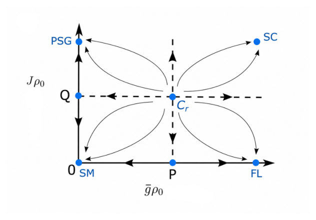
<figcaption class="paper-figure-caption"><b>Fig 1.</b> Figure 1: Schematic renormalization-group flow diagram adapted from Fig. 3(a) of Ref. [17]. The central fixed point Cr is depicted as unstable along both coupling directions, corresponding to a total-repeller fixed point. Such a topology implies that all perturbations grow under coarse graining and has important consequences for the robustness of quantum-critical scaling and ω/T collapse.</figcaption>
</figure>
<figure class="paper-figure-card">
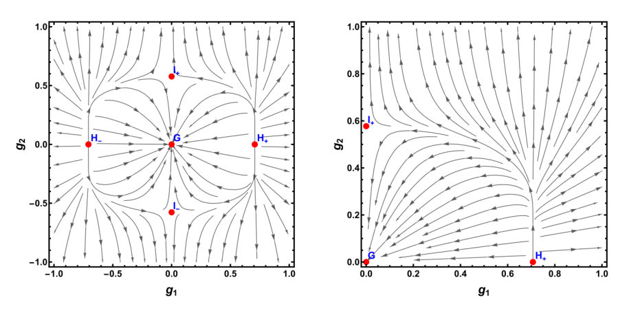
<figcaption class="paper-figure-caption"><b>Fig 2.</b> Figure 2: Numerical phase portrait of the RG Eqs. (22) for ϵ = 1. Red symbols denote finite-coupling fixed points. The Gaussian fixed point G = (0, 0) is the only infrared-attractive finite fixed point. The interacting fixed points H± = (±ϵ/2, 0) lie on the invariant manifold g2 = 0 and are unstable to transverse perturbations, while the Ising-like fixed points I± = (0, ±ϵ/3) are saddles. The left panel shows the full range −1 ≤g1,2 ≤1; the right panel highlights the physically relevant sector g1 ≥0, g2 ≥0.</figcaption>
</figure>
<figure class="paper-figure-card">
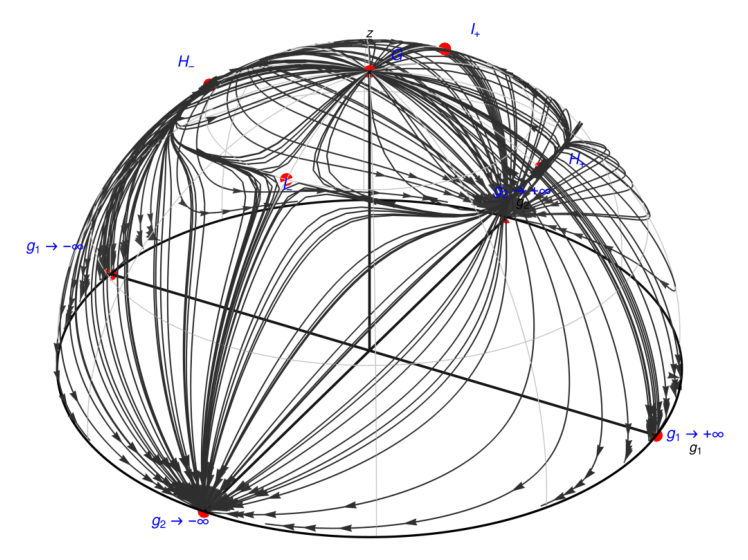
<figcaption class="paper-figure-caption"><b>Fig 3.</b> Figure 3: Poincar´e compactification of the RG flow of Eqs. (22)–(23) for ϵ = 1. The infinite coupling plane is mapped onto a semi-sphere with the equator representing asymptotic strong-coupling directions. Generic trajectories are attracted toward the g2-dominated directions at infinity, while the g1-axis directions act as angular saddles. The compactified flow demonstrates the absence of a stable interacting infrared fixed point and reveals the global runaway topology of the RG equations.</figcaption>
</figure>
<figure class="paper-figure-card">
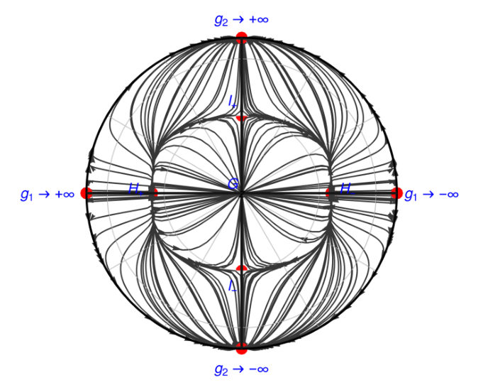
<figcaption class="paper-figure-caption"><b>Fig 4.</b> Figure 4: Poincar´e compactification of the RG flow of Eqs. (22)–(23) for ϵ = 1. When viewed from below the angular flow at infinity becomes transparent. Generic trajectories are attracted toward the g2-dominated directions at infinity, while the g1-axis directions act as angular saddles. The compactified flow demonstrates the absence of a stable interacting infrared fixed point and reveals the global runaway topology of the RG equations.</figcaption>
</figure>
</div>

<p><strong>Summary.</strong> This theoretical paper uses Renormalization Group (RG) topology to analyze the charge-Kondo breakdown in cuprate superconductors. The analysis shows that the expected interacting fixed point is unstable, leading to runaway flow behavior. Ultimately, the work establishes that apparent extended scaling behavior is likely a pseudo-critical crossover rather than evidence of true quantum criticality.</p>
<p><strong>Why it may be interesting.</strong> While focused on cuprates, the rigorous application of RG topology to distinguish true criticality from pseudo-criticality provides a powerful general diagnostic tool applicable to any strongly correlated system exhibiting complex phase transitions.</p>
<details>
<summary>Detailed structure</summary>
<p><strong>Main problem.</strong> The paper investigates the dynamical charge-Kondo-breakdown scenario proposed for cuprate superconductors to distinguish genuine quantum criticality from pseudo-critical behavior.</p>
<p><strong>Main result.</strong> Generic RG trajectories exhibit runaway behavior, suggesting that apparent extended scaling is due to a crossover controlled by a near-critical fixed point rather than true asymptotic scale invariance.</p>
<p><strong>Method.</strong> The authors analyze the coupled Renormalization Group (RG) flow equations, determining the fixed-point structure and stability properties using analytical solutions combined with numerical phase portraits.</p>
<p><strong>Model / system.</strong> The study is motivated by cuprate superconductors and analyzes an effective low-energy theory derived from models like the t-J model. The analysis focuses on the RG flow in coupling space.</p>
<p><strong>Key observables.</strong> Fixed-point structure, stability eigenvalues of the RG flow, crossover scale, and the topology of the RG flow.</p>
<p><strong>Important parameters / regimes.</strong> The system is analyzed near a putative finite-coupling interacting fixed point; the distinction between asymptotic vs. crossover scaling is key.</p>
<p><strong>Assumptions / limitations.</strong> The analysis relies on mapping the physical problem onto an RG flow structure and distinguishing between different types of critical behavior (e.g., total-repeller QCPs).</p>
<p><strong>Figures summary.</strong> References to Figure 1 suggest showing the RG flow diagram for the t-J model, featuring a central, fully unstable fixed point labeled as a 'total-repeller'.</p>
<p><strong>Paper structure.</strong> The paper proceeds by analyzing the RG flow equations governing the charge-Kondo breakdown. It determines the stability of proposed interacting fixed points and uses topological arguments to classify the nature of observed scaling behavior.</p>
</details>
<details>
<summary>Abstract</summary>
<p>In this paper, we examine the dynamical charge-Kondo-breakdown scenario proposed for cuprate superconductors within the perspective of renormalization group (RG) topology. By analyzing the coupled RG flow equations governing the effective low-energy theory, we determine the fixed-point structure, stability properties, and global organization of the flow. We find that the putative finite-coupling interacting fixed point is unstable against perturbations transverse to an invariant critical manifold. As a result, generic RG trajectories exhibit runaway behavior. To elucidate the global structure of the theory, we combine analytical solutions of the flow equations with numerical phase portraits and Poincaré compactification. This analysis reveals that the interacting fixed point exhibits a marginally relevant instability, generating an exponentially large but finite crossover scale. The resulting flow topology closely resembles anisotropy-driven runaway flows encountered in fluctuation-induced weakly first-order transitions. Within this framework, the apparent quantum-critical regime can be understood as an extended crossover controlled by a near-critical fixed point, rather than by asymptotic scale invariance. The results obtained indicate that the existence of extended scaling behavior does not, by itself, imply the presence of a stable interacting quantum critical state. More generally, our analysis demonstrates how RG topology can provide a powerful diagnostic for distinguishing genuine criticality from pseudo-critical behavior in theories of strongly correlated quantum matter.</p>
</details>
<p><sub><a href="#top">↑ back to top</a></sub></p>

<p><a id="paper-2607.20045"></a></p>
<h3 id="pn-qnn-harnessing-physical-noise-as-a-native-regularizer-in-photonic-hybrid-quantum-neural-networks"><a href="http://arxiv.org/abs/2607.20045v1">PN-QNN: Harnessing Physical Noise as a Native Regularizer in Photonic Hybrid Quantum Neural Networks</a></h3>
<p><strong>Authors:</strong> Farah Elnakhal, Alberto Marchisio, Nouhaila Innan, Gabriel Falcao, Muhammad Shafique<br>
<strong>Type:</strong> both · <strong>Category:</strong> disordered systems and neural networks · <strong>PDF:</strong> <a href="https://arxiv.org/pdf/2607.20045v1">https://arxiv.org/pdf/2607.20045v1</a><br>
<strong>Analysis basis:</strong> full PDF text, analyzed in chunks
<strong>Topic relevance:</strong> <code>methods for driven-dissipative</code> <strong>3/5</strong> · <code>analog quantum simulation</code> <strong>2/5</strong> · <code>correlated / nonlocal dissipation</code> <strong>2/5</strong> · <code>driven-dissipative phase transition</code> <strong>2/5</strong> · <code>QC/QI experiment</code> <strong>1/5</strong> · <code>correlated cavity matter</code> <strong>1/5</strong> · <code>non-equilibrium dynamics</code> <strong>1/5</strong></p>
<div class="figure-strip-hint">↔ Scroll figures horizontally</div>
<div class="paper-figures-scroll">
<figure class="paper-figure-card">
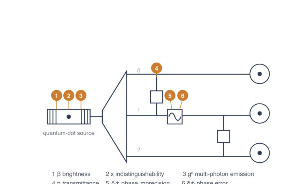
<figcaption class="paper-figure-caption"><b>Fig 1.</b> Fig. 1: Noise model on photonic GBS device. The Perceval noise model contains 7 noise parameters (6 continuous values and 1 boolean value), which can either be located at the photon source, interferometer, or globally.</figcaption>
</figure>
<figure class="paper-figure-card">
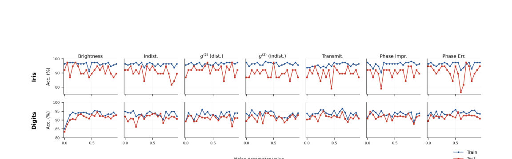
<figcaption class="paper-figure-caption"><b>Fig 2.</b> Fig. 2: Single parameter sensitivity sweep on Iris (top) and Digits (bottom). All noise parameters are fixed at their noiseless values except the parameter being swept, and accuracy is recorded.</figcaption>
</figure>
<figure class="paper-figure-card">
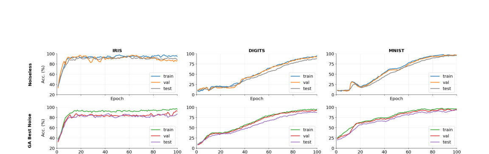
<figcaption class="paper-figure-caption"><b>Fig 3.</b> Fig. 3: Left: Iris training curves, noiseless (top) vs. GA-best noise (bottom). Middle: Digits training curves, noiseless (top) vs. GA-best noise (bottom). Right: MNIST training curves, noiseless (top) vs. GA-best noise (bottom). All trained for 100 epochs.</figcaption>
</figure>
</div>

<p><strong>Summary.</strong> This work explores using inherent physical noise from photonic quantum hardware as a regularization technique for training hybrid quantum neural networks. By optimizing seven noise parameters via a Genetic Algorithm, the authors found that while noise can boost performance on some datasets (Iris, Digits), it harms others (MNIST). This suggests noise is a powerful but highly dataset-dependent resource.</p>
<p><strong>Why it may be interesting.</strong> It bridges the gap between theoretical quantum machine learning models and realistic hardware constraints by treating unavoidable noise not just as an error term, but as a tunable resource for improving model generalization.</p>
<details>
<summary>Detailed structure</summary>
<p><strong>Main problem.</strong> The paper investigates whether physical noise inherent to near-term photonic quantum hardware can be utilized as a beneficial, hardware-native regularizer for training Photonic Hybrid Quantum Neural Networks (PHQCNNs).</p>
<p><strong>Main result.</strong> While GA-tuned noise provided modest accuracy gains on Iris and Digits, it caused a clear degradation on MNIST, suggesting that physical noise acts as a free regularizer but not universally across all tasks.</p>
<p><strong>Method.</strong> The authors employed a Genetic Algorithm (GA) to jointly optimize the seven parameters of a physical noise model while training PHQCNNs for classification tasks using simulators.</p>
<p><strong>Model / system.</strong> The system involves Photonic Hybrid Quantum-Classical Neural Networks (PHQCNNs) simulated using Quandela's Perceval simulator. The quantum layer is perturbed by a detailed, seven-parameter physical noise model.</p>
<p><strong>Key observables.</strong> Final test accuracy on Iris, Digits, and MNIST; the train/test accuracy gap as a regularization signature.</p>
<p><strong>Important parameters / regimes.</strong> The seven continuous and boolean parameters defining the physical noise model (e.g., Brightness, Indistinguishability, $g^{(2)}$).</p>
<p><strong>Assumptions / limitations.</strong> The comparison is confounded by differences in architecture between datasets; the work is simulation-based, not yet on physical hardware.</p>
<p><strong>Figures summary.</strong> Figures show training curves comparing noiseless vs. GA-best noise across three datasets, and sensitivity sweeps illustrate how individual noise parameters affect performance.</p>
<p><strong>Paper structure.</strong> The paper introduces the problem of noise in quantum computing, details the PHQCNN setup with a physical noise model, uses a Genetic Algorithm to optimize noise parameters for multiple datasets, analyzes per-parameter sensitivities, and concludes that regularization is dataset-dependent.</p>
</details>
<details>
<summary>Abstract</summary>
<p>Physical noise in near-term quantum hardware is usually treated as a nuisance to suppress. We ask whether it can instead act as a hardware-native regularizer for photonic hybrid quantum-classical neural networks (PHQCNNs), analogous to noise-injection regularization in classical deep learning. Using Quandela's Perceval simulator and the MerLin framework, we build PHQCNNs for Iris, Digits, and MNIST and inject Perceval's seven-parameter physical noise model directly into training. A genetic algorithm searches the six continuous noise dimensions and 1 boolean parameter to find, per dataset, the configuration maximizing validation accuracy, compared against a noiseless baseline across five seeds. GA-tuned noise yields modest accuracy gains on Iris (+0.82pp) and Digits (+1.45pp), but a clear degradation on MNIST (-1.21pp). Per-parameter sweeps show that no individual noise parameter is consistently beneficial, motivating the joint search, while a second-order loss expansion shows that physical noise induces a Tikhonov-like regularization term whose effect is dataset-dependent. Physical photonic noise can thus act as a free regularizer, but not universally.</p>
</details>
<p><sub><a href="#top">↑ back to top</a></sub></p>

<p><a id="paper-2607.19861"></a></p>
<h3 id="a-multi-resolvent-hierarchy-for-the-eth-smooth-function"><a href="http://arxiv.org/abs/2607.19861v1">A Multi-Resolvent Hierarchy for the ETH Smooth Function</a></h3>
<p><strong>Authors:</strong> Zhiqiang Huang<br>
<strong>Type:</strong> theory · <strong>Category:</strong> statistical mechanics · <strong>PDF:</strong> <a href="https://arxiv.org/pdf/2607.19861v1">https://arxiv.org/pdf/2607.19861v1</a><br>
<strong>Analysis basis:</strong> full PDF text, analyzed in chunks
<strong>Topic relevance:</strong> <code>non-equilibrium dynamics</code> <strong>3/5</strong> · <code>scars &amp; prethermalization</code> <strong>2/5</strong> · <code>Keldysh / 2PI / non-Gaussian methods</code> <strong>1/5</strong> · <code>analog quantum simulation</code> <strong>1/5</strong> · <code>driven-dissipative phase transition</code> <strong>1/5</strong> · <code>entanglement &amp; information structure</code> <strong>1/5</strong> · <code>methods for driven-dissipative</code> <strong>1/5</strong> · <code>non-equilibrium universality</code> <strong>1/5</strong></p>
<div class="figure-strip-hint">↔ Scroll figures horizontally</div>
<div class="paper-figures-scroll">
<figure class="paper-figure-card">
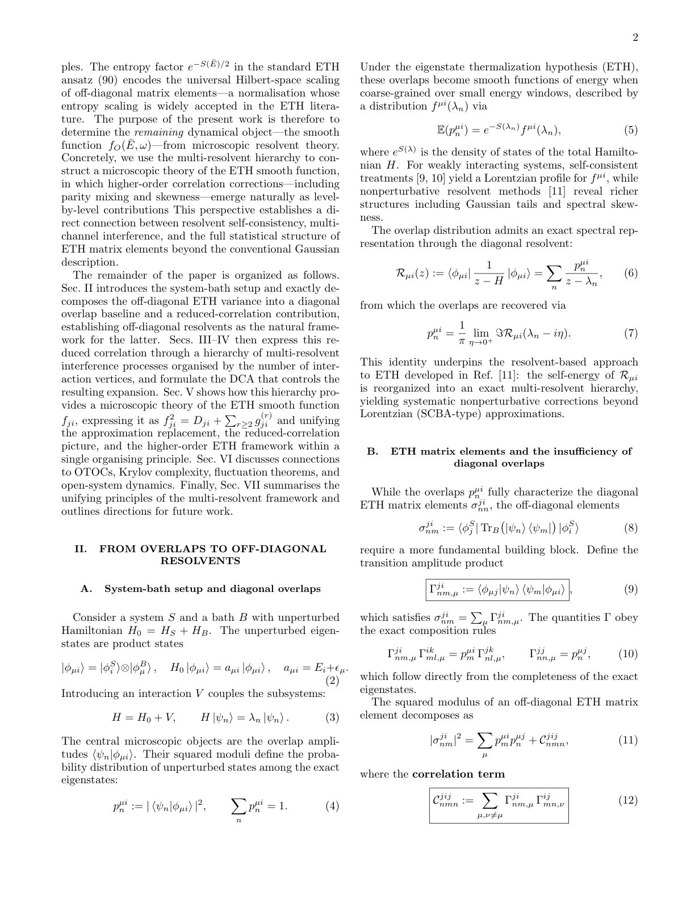
<figcaption class="paper-figure-caption"><b>Fig 1.</b> Low-resolution page preview, page 2</figcaption>
</figure>
<figure class="paper-figure-card">
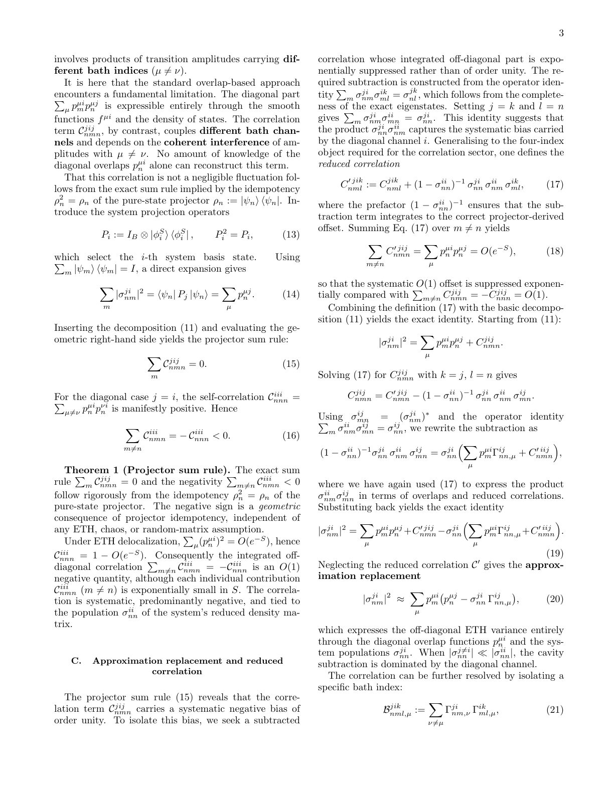
<figcaption class="paper-figure-caption"><b>Fig 2.</b> Low-resolution page preview, page 3</figcaption>
</figure>
<figure class="paper-figure-card">
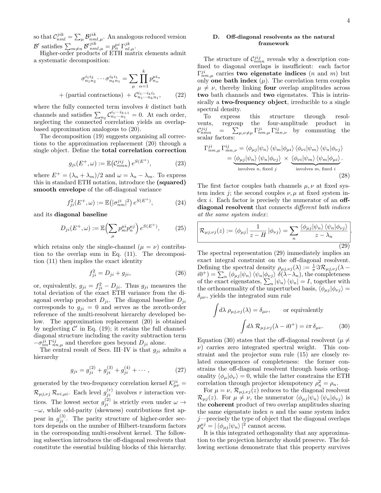
<figcaption class="paper-figure-caption"><b>Fig 3.</b> Low-resolution page preview, page 4</figcaption>
</figure>
<figure class="paper-figure-card">
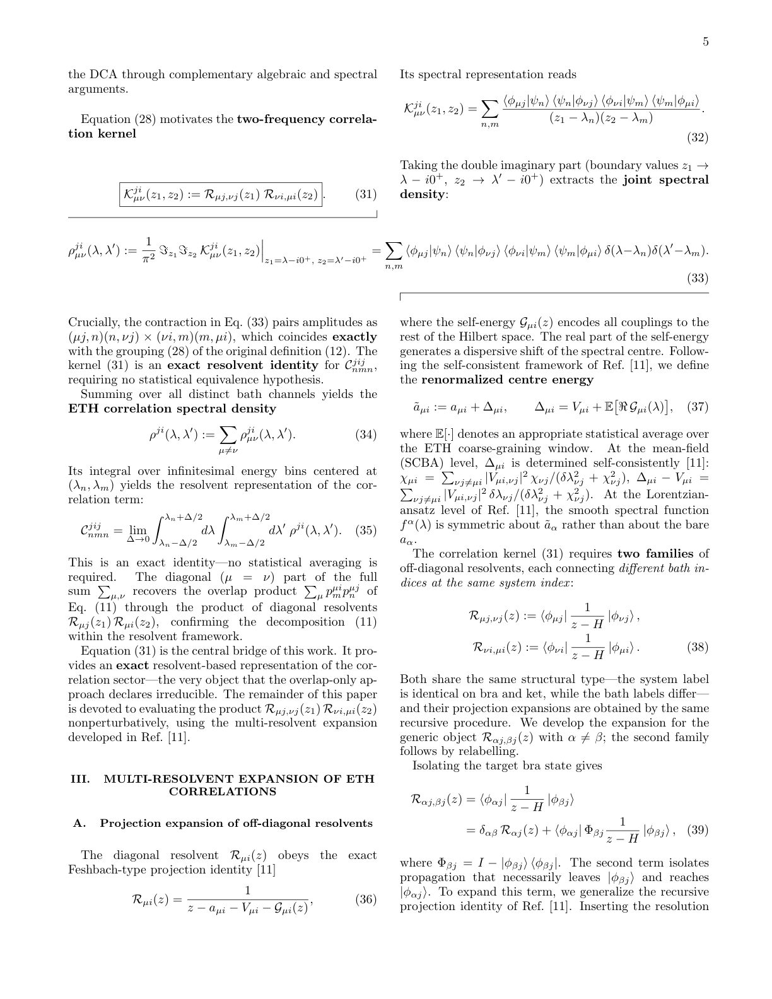
<figcaption class="paper-figure-caption"><b>Fig 4.</b> Low-resolution page preview, page 5</figcaption>
</figure>
<figure class="paper-figure-card">
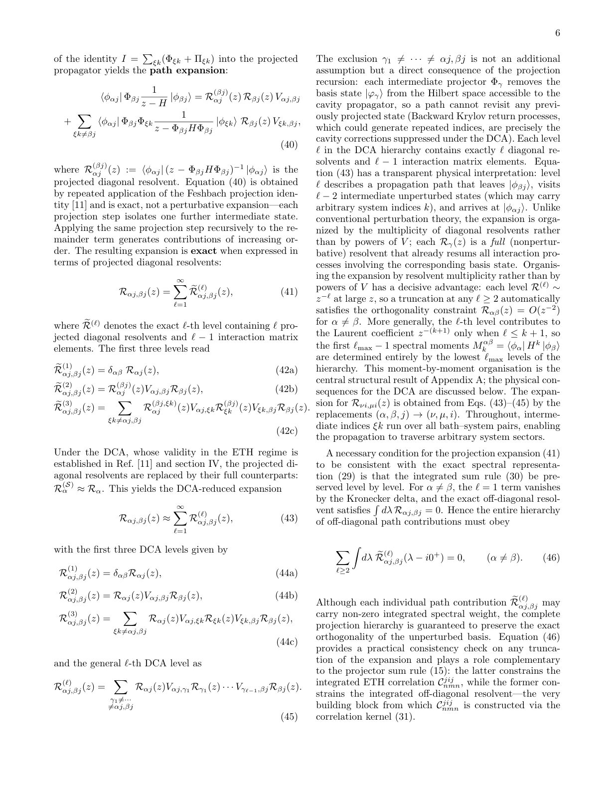
<figcaption class="paper-figure-caption"><b>Fig 5.</b> Low-resolution page preview, page 6</figcaption>
</figure>
</div>

<p><strong>Summary.</strong> This paper introduces a multi-resolvent hierarchy to systematically derive the ETH smooth function, which governs energy correlations in isolated quantum systems. By expanding correlation corrections into an improvable series, it moves beyond phenomenological models. The resulting framework provides testable predictions regarding parity structure and spectral moment conservation.</p>
<p><strong>Why it may be interesting.</strong> This work provides a rigorous, systematic tool to calculate thermalization properties beyond simple mean-field or single-channel approximations, which is crucial for understanding quantum chaos in complex many-body systems.</p>
<details>
<summary>Detailed structure</summary>
<p><strong>Main problem.</strong> The paper aims to develop a systematic, microscopic theory for the ETH smooth function $f_O(ar{E}, \omega)$, which describes the energy dependence of off-diagonal matrix elements in isolated quantum many-body systems approaching thermal equilibrium.</p>
<p><strong>Main result.</strong> A multi-resolvent hierarchy is constructed that systematically organizes correlation corrections into an improvable expansion, revealing a parity structure and providing a unified theoretical framework for $f_{ji}^2$.</p>
<p><strong>Method.</strong> The authors employ recursive projection identities combined with a Diagonal Closure Approximation (DCA) to expand the ETH smooth function as a series of correlation levels ($g^{(r)}_{ji}$).</p>
<p><strong>Model / system.</strong> The analysis concerns isolated quantum many-body systems governed by a Hamiltonian $H = H_0 + V$, where $H_0$ splits into system (S) and bath (B) components. The theory is applied to calculate properties related to energy eigenstates $|\psi_n
angle$.</p>
<p><strong>Key observables.</strong> The ETH smooth function $f_{ji}(ar{E}, \omega)$, diagonal overlaps ($p_{\mu i}^n$), and correlation terms like $C_{jij}^{nmn}$.</p>
<p><strong>Important parameters / regimes.</strong> Energy ($ar{E}$), frequency ($\omega$), and the order of correlation expansion ($r$).</p>
<p><strong>Assumptions / limitations.</strong> The development relies on projector idempotency for deriving rigorous sum rules, and approximations are made by neglecting reduced correlations in certain steps.</p>
<p><strong>Figures summary.</strong> Not specified (Notes focus on mathematical identities and structural theorems rather than figure descriptions).</p>
<p><strong>Paper structure.</strong> The paper builds the theory through defining the problem using ETH concepts, developing the multi-resolvent hierarchy via projection identities, deriving key spectral sum rules, and finally analyzing the resulting parity structure of the correlation corrections.</p>
</details>
<details>
<summary>Abstract</summary>
<p>The eigenstate thermalization hypothesis (ETH) provides a statistical description of thermalization in isolated quantum many-body systems, yet the phenomenological smooth function $f_O(\bar{E},ω)$ -- which controls the energy dependence of off-diagonal matrix elements -- lacks a systematic microscopic foundation. We develop a multi-resolvent hierarchy for the correlation corrections entering the ETH smooth function. Using recursive projection identities together with a diagonal closure approximation (DCA), the hierarchy organizes multi-channel interference processes by the number of interacting bath channels, replacing the uncontrolled neglect of higher-order correlations with a systematically improvable expansion. The ETH smooth function is thereby obtained as $f_{ji}^2 = D_{ji} + \sum_{r\ge 2} g_{ji}^{(r)}$, where the diagonal baseline $D_{ji}$ and each correlation level $g_{ji}^{(r)}$ are expressed entirely through diagonal spectral functions and microscopic interaction couplings, providing a unified, closed, and systematically improvable microscopic theory. A rigorous projector sum rule constrains the entire hierarchy: the integrated off-diagonal correlation carries a negative bias of order unity, a consequence of projector idempotency. The hierarchy further reveals a parity structure in which even-$r$ sectors carry even parity under $ω\to-ω$ while the $r=3$ sector generates the first odd-parity (skewness) contribution -- absent from all single-resolvent closures -- suggesting experimentally testable signatures in quantum many-body systems.</p>
</details>
<p><sub><a href="#top">↑ back to top</a></sub></p>

<p><a id="paper-2607.19594"></a></p>
<h3 id="sensing-traffic-and-construction-in-termites"><a href="http://arxiv.org/abs/2607.19594v1">Sensing, Traffic, and Construction in Termites</a></h3>
<p><strong>Authors:</strong> Yufei Xiao, Qinglin Wu, Kukhyun Lim, Nan-Yao Su, Paul Bardunias, Atanu Chatterjee, Saad Bhamla<br>
<strong>Type:</strong> both · <strong>Category:</strong> statistical mechanics · <strong>PDF:</strong> <a href="https://arxiv.org/pdf/2607.19594v1">https://arxiv.org/pdf/2607.19594v1</a><br>
<strong>Analysis basis:</strong> full PDF text, analyzed in chunks
<strong>Topic relevance:</strong> <code>non-equilibrium dynamics</code> <strong>3/5</strong> · <code>non-equilibrium universality</code> <strong>3/5</strong> · <code>driven-dissipative phase transition</code> <strong>2/5</strong> · <code>Frenkel-Kontorova</code> <strong>1/5</strong> · <code>Keldysh / 2PI / non-Gaussian methods</code> <strong>1/5</strong> · <code>methods for driven-dissipative</code> <strong>1/5</strong></p>
<div class="figure-strip-hint">↔ Scroll figures horizontally</div>
<div class="paper-figures-scroll">
<figure class="paper-figure-card">
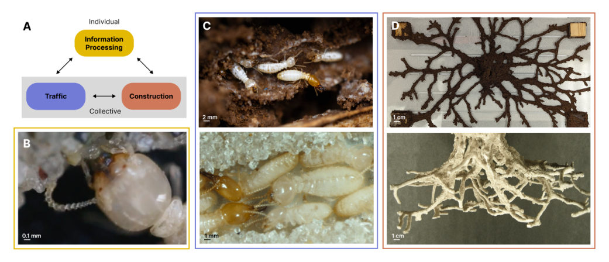
<figcaption class="paper-figure-caption"><b>Fig 1.</b> FIG. 1. Overview of the physical and behavioral themes developed in this review. (A) Schematic linking information, movement, and construction in subterranean termite colonies. (B) antennal sensing, highlighting antennation as a primary mode of local information acquisition and interaction (photo: Qinglin Wu). (C) bidirectional traffic flow through confined conduits, shown in an above-ground shelter tube (top) and a below-ground planar tunnel network (bottom) (photo: Qinglin Wu). (D) construction across scales, from above-ground shelter tubes (top, photo: Kukhyun Lim) to extended below-ground tunnel networks (bottom; photo: Paul Bardunias).</figcaption>
</figure>
<figure class="paper-figure-card">
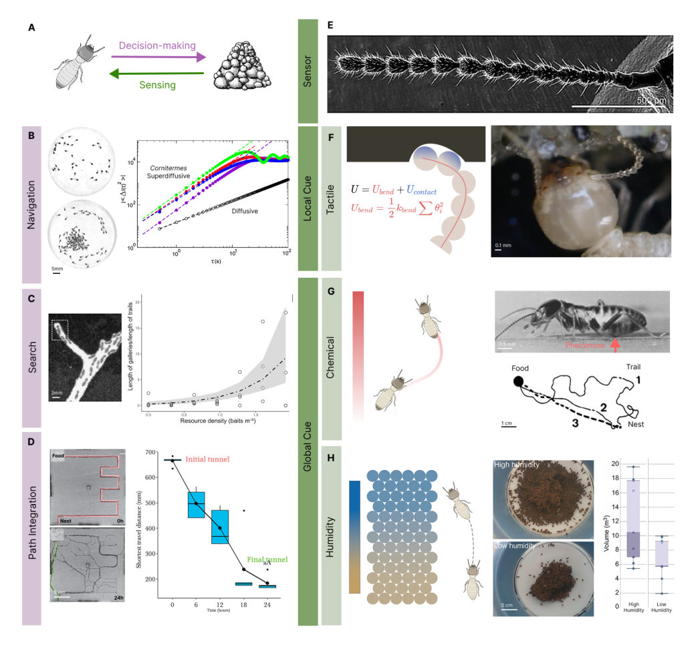
<figcaption class="paper-figure-caption"><b>Fig 2.</b> FIG. 2. Information processing in termite colonies. (A) Schematic of the coupled sensing-action loop between individual termites and the substrate they construct and inhabit. (B) Navigation. Mean squared displacement of four Cornitermes sp. workers during open-arena foraging, with MSD ∝Dτ α indicating MSD scaling [23]. For example, purple indicates α = 1.90. (C) Search. Left: Close-up of termite collective excavating tunnels [24]. Right: tunnel-tip activity and correlation between resource density and total tunnel length in C. formosanus [25]. (D) Path optimization. Left: tunnel network of C. formosanus shows pruning of long paths and reinforcement of short paths from the nest (bottom)...</figcaption>
</figure>
<figure class="paper-figure-card">
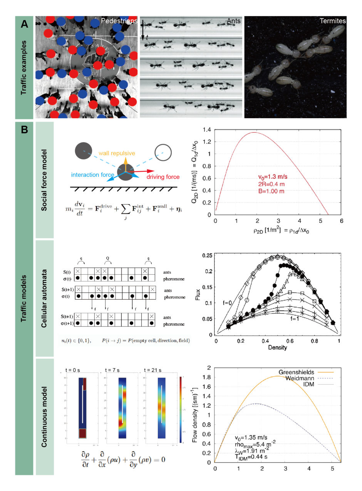
<figcaption class="paper-figure-caption"><b>Fig 3.</b> FIG. 3. Traffic systems and model classes. (A) Representative traffic systems used as baselines for termite traffic: pedes- trian crowds [55], ant trails [56], and termite movement in confined galleries (Photo: Qinglin Wu). (B) Modeling descriptions arranged by scale. Social-force models represent individuals as self-driven particles with driving, interaction, wall, and noise terms. Cellular automaton models represent occupancy and probabilistic movement on a lattice. Continuum models describe density and velocity fields through conservation laws. The corresponding flux-density relations summarize how transport ca- pacity changes with density [57–61].</figcaption>
</figure>
<figure class="paper-figure-card">
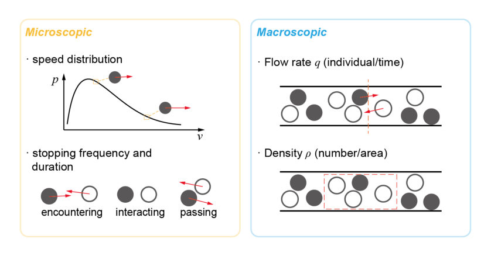
<figcaption class="paper-figure-caption"><b>Fig 4.</b> FIG. 4. Microscopic and macroscopic observables for confined bidirectional traffic. (A) Microscopic observables extracted from individual trajectories include the speed distribution p(v), stopping frequency and duration, and transitions among encounter, interaction, and passing states during local contact events. (B) Macroscopic observables obtained by coarse- graining trajectories include flow rate q, measured as the number of agents crossing a reference line per unit time, and density ρ, measured as the number of agents within a defined area or channel length. Filled and open circles indicate agents moving in opposite directions.</figcaption>
</figure>
<figure class="paper-figure-card">
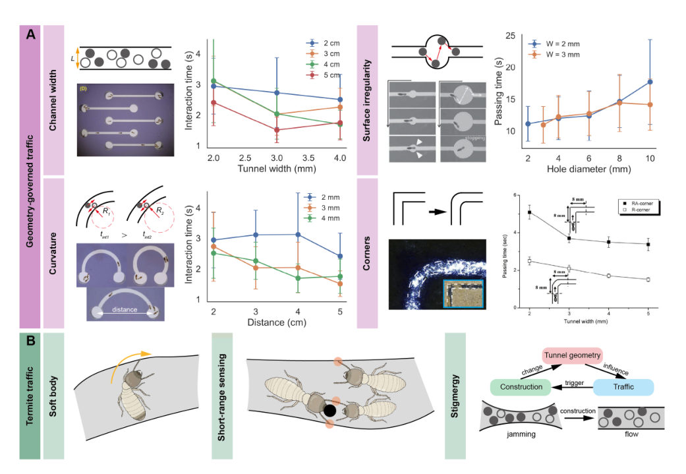
<figcaption class="paper-figure-caption"><b>Fig 5.</b> FIG. 5. Geometry-governed termite traffic. (A) Controlled tunnel manipulations show that channel width, surface irregularity, curvature, and corners alter interaction or passing time. Wider channels generally reduce encounter delays, while irregularities, curvature, and sharp corners can increase transport costs; rounding or smoothing can reduce those costs [50– 52, 70]. (B) Termite-specific features that distinguish traffic in self-built conduits: body compliance, short-range tactile sensing, and stigmergic remodeling, in which congestion can trigger construction that changes future flow.</figcaption>
</figure>
</div>

<p><strong>Summary.</strong> This review synthesizes how termites manage complex tasks like foraging and building in soil whose properties are constantly altered by their own activities. It frames this as a coupled problem of sensing, traffic flow, and material deposition across vast scales. The work proposes a quantitative physics-of-life framework to model these self-organizing, adaptive subterranean ecosystems.</p>
<p><strong>Why it may be interesting.</strong> The concept of an environment that is dynamically rewritten by the agents moving within it—where memory, resistance, and structure are emergent variables—is highly relevant to non-equilibrium statistical mechanics and active matter theory.</p>
<details>
<summary>Detailed structure</summary>
<p><strong>Main problem.</strong> The review synthesizes how three linked processes—sensing, traffic flow, and construction—interact in termite colonies to create emergent order within a shared, evolving granular medium.</p>
<p><strong>Main result.</strong> Termite behavior provides a model for studying complex systems where local interactions (like tactile sensing or particle movement) continually remodel the environment that dictates future collective dynamics.</p>
<p><strong>Method.</strong> The paper is a comprehensive review synthesizing experimental evidence across multiple length scales, ranging from antennal contacts to meter-scale architecture.</p>
<p><strong>Model / system.</strong> The physical system is subterranean and mound-building termite colonies operating within granular substrates (soil). The model involves coupling active matter dynamics (traffic) with environmental feedback (substrate remodeling via excavation/deposition).</p>
<p><strong>Key observables.</strong> Tunnel network structure, Mean Squared Displacement ($ ext{MSD}$), local geometry (curvature, roughness), moisture gradients, and path optimization rates.</p>
<p><strong>Important parameters / regimes.</strong> Length scales (antennal to meter-scale), substrate properties (moisture content, grain size), and interaction types (tactile, chemical, physical).</p>
<p><strong>Assumptions / limitations.</strong> The primary framework assumes that local, noisy interactions couple sensing, transport, and construction through the shared material medium.</p>
<p><strong>Figures summary.</strong> Figures illustrate the coupling of information, movement, and construction across scales; detail sensing channels like antennal scanning and $ ext{MSD}$ scaling; and compare various environmental cues (moisture, airflow, chemical) influencing behavior.</p>
<p><strong>Paper structure.</strong> The review is structured around synthesizing three coupled problems: 1) Sensing local geometry/cues during search/excavation; 2) Traffic movement through evolving conduits; and 3) Substrate remodeling by excavation/deposition. It emphasizes experimental findings and motivates a quantitative physics-of-life framework.</p>
</details>
<details>
<summary>Abstract</summary>
<p>Subterranean and mound-building termites excavate, transport, and build within the same granular substrate that later regulates how they sense, move, and deposit material. From antennal-scale contacts through body-scale traffic to meter-scale architecture, this review synthesizes three linked problems: how workers sense local geometry and physical cues during search and excavation; how traffic moves through narrow, evolving conduits; and how excavation and deposition remodel the substrate that guides later behavior. Across these length scales, noisy local interactions couple sensing, transport, and construction through a shared material medium, leading to emergent order at the colony scale. We emphasize what is established experimentally, where evidence remains sparse or limited to a few model systems, and how emerging imaging, tracking, and modeling tools are making these feedbacks quantitatively accessible. We use this synthesis to motivate a quantitative physics-of-life framework for termite colonies that continually rewrite the medium through which they sense, move, and build.</p>
</details>
<p><sub><a href="#top">↑ back to top</a></sub></p>

<p><a id="paper-2607.20036"></a></p>
<h3 id="vanishing-spin-stiffness-in-weakly-disordered-two-dimensional-heisenberg-ferromagnets"><a href="http://arxiv.org/abs/2607.20036v1">Vanishing spin stiffness in weakly disordered two-dimensional Heisenberg ferromagnets</a></h3>
<p><strong>Authors:</strong> Jacopo Niedda, Aldo Coraggio, Giacomo Bracci-Testasecca, Antonello Scardicchio<br>
<strong>Type:</strong> theory · <strong>Category:</strong> disordered systems and neural networks · <strong>PDF:</strong> <a href="https://arxiv.org/pdf/2607.20036v1">https://arxiv.org/pdf/2607.20036v1</a><br>
<strong>Analysis basis:</strong> full PDF text, analyzed in chunks
<strong>Topic relevance:</strong> <code>analog quantum simulation</code> <strong>3/5</strong> · <code>Keldysh / 2PI / non-Gaussian methods</code> <strong>2/5</strong> · <code>non-equilibrium universality</code> <strong>2/5</strong> · <code>exotic spin models in light-matter</code> <strong>1/5</strong> · <code>non-equilibrium dynamics</code> <strong>1/5</strong> · <code>spintronics-quantum-optics interface</code> <strong>1/5</strong></p>
<div class="figure-strip-hint">↔ Scroll figures horizontally</div>
<div class="paper-figures-scroll">
<figure class="paper-figure-card">
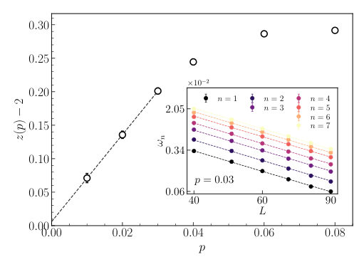
<figcaption class="paper-figure-caption"><b>Fig 1.</b> FIG. 1: Increase of the dynamical exponent z from the clean ferromagnetic values z = 2 as a function of the antiferromagnetic bond concentration p. The linear fit (dashed line) shows the expected behavior for p →0. (Inset) Scaling of n-th eigenvalue, averaged over disorder realizations, with respect to the system size L, for p = 0.03.</figcaption>
</figure>
<figure class="paper-figure-card">
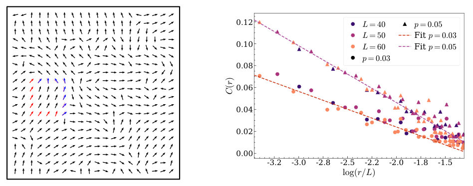
<figcaption class="paper-figure-caption"><b>Fig 2.</b> FIG. 2: Left panel: A square patch on a classical ground state spin-configuration, used to measure the local spin stiffness. The spin vectors are three-dimensional, even though they are drawn as planar arrows for clarity. The boundary red spins are kept fixed, while the boundary blue spins are rotated by a uniform angle θ = π/10. Then, all spins on the boundary of the patch are held fixed, while the remaining spins in the system are relaxed to minimize the energy. The value of the stiffness of the clean FM in this protocol is ρ(0) s ≃3.5 is an arbitrary scale. Right panel: Spin stiffness correlations as a function of the distance. From the linear fit, we find ∆≃0.2 for p = 0.03 (for which...</figcaption>
</figure>
<figure class="paper-figure-card">
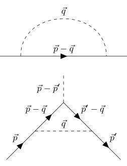
<figcaption class="paper-figure-caption"><b>Fig 3.</b> FIG. 3: The two relevant diagrams for the one-loop computation: self energy (top) and vertex/disorder renormalization (bottom). Continuous line represents the bare ϕ propagator, while the dashed line is the static disordered σ propagator.</figcaption>
</figure>
<figure class="paper-figure-card">
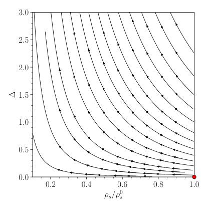
<figcaption class="paper-figure-caption"><b>Fig 4.</b> FIG. 4: One-loop RG flux lines. One can recognize the RG orbits where ρ2 s∆is a constant. The red dot is the repulsive FM fixed-point. The system runs to an infinite-disorder regime with ρs = 0, ∆→∞.</figcaption>
</figure>
</div>

<p><strong>Summary.</strong> This paper demonstrates that weak bond disorder in 2D Heisenberg ferromagnets fundamentally changes their long-wavelength magnetic dynamics. Using field theory and numerical methods, the authors show this disorder causes the spin stiffness to decay toward zero. This results in anomalous magnon behavior characterized by a dynamical exponent $z > 2$, indicating a transition towards an infinite-disorder regime.</p>
<p><strong>Why it may be interesting.</strong> The finding of anomalous low-energy scaling ($z>2$) due to disorder is relevant to understanding critical dynamics in disordered quantum magnets, which shares theoretical parallels with systems studied in AMO physics.</p>
<details>
<summary>Detailed structure</summary>
<p><strong>Main problem.</strong> The study investigates how weak, short-ranged antiferromagnetic bond disorder qualitatively alters the long-wavelength dynamics of two-dimensional Heisenberg ferromagnets.</p>
<p><strong>Main result.</strong> Weak disorder causes the spin stiffness to vanish at long wavelengths, leading to anomalously soft magnons characterized by a dynamical exponent $z > 2$.</p>
<p><strong>Method.</strong> The analysis employs replica field theory calculations combined with numerical diagonalization of the semiclassical spin-wave Hamiltonian.</p>
<p><strong>Model / system.</strong> The system is a two-dimensional Heisenberg ferromagnet on a square lattice subjected to quenched random bond disorder, modeled by varying exchange couplings $J_{ij}$.</p>
<p><strong>Key observables.</strong> Spin stiffness ($
ho_s$), dynamical exponent ($z$), and the spatial correlation function of local spin stiffness $C(\vec{x}, \vec{x}')$.</p>
<p><strong>Important parameters / regimes.</strong> The disorder concentration $p$ (small), the system dimension ($d=2$), and the RG flow parameter $\ell$.</p>
<p><strong>Assumptions / limitations.</strong> The analysis relies on the small $p$ approximation and the long-wavelength limit, treating the disorder as marginal in 2D.</p>
<p><strong>Figures summary.</strong> Figures illustrate the increase of the dynamical exponent $z$ with disorder strength $p$, and show spin stiffness correlations decaying logarithmically with distance.</p>
<p><strong>Paper structure.</strong> The paper progresses from defining the disordered Hamiltonian to calculating local stiffness via a twist protocol, then applying replica field theory and RG flow to derive scaling laws for $
ho_s$ and $z$.</p>
</details>
<details>
<summary>Abstract</summary>
<p>We show that a small fraction of antiferromagnetic bonds qualitatively alters the long-wavelength dynamics of two-dimensional Heisenberg ferromagnets. Although the classical ground state remains magnetized, weak bond frustration generates logarithmically correlated spatial fluctuations of the local spin stiffness, despite the microscopic disorder being short ranged. A replica field theory calculation shows that the effective disorder strength grows under coarse graining, while the spin stiffness decreases, yielding anomalously soft magnons with a scale-dependent dynamical exponent $z > 2$. Numerical diagonalization of the semiclassical spin-wave Hamiltonian confirms the anomalous low-energy scaling. The flow is toward an infinite-disorder, zero stiffness regime.</p>
</details>
<p><sub><a href="#top">↑ back to top</a></sub></p>

<p><a id="paper-2607.19499"></a></p>
<h3 id="a-unified-framework-for-anomalous-boson-bunching"><a href="http://arxiv.org/abs/2607.19499v1">A unified framework for anomalous boson bunching</a></h3>
<p><strong>Authors:</strong> Léo Pioge, Leonardo Novo, Nicolas J. Cerf<br>
<strong>Type:</strong> theory · <strong>Category:</strong> other · <strong>PDF:</strong> <a href="https://arxiv.org/pdf/2607.19499v1">https://arxiv.org/pdf/2607.19499v1</a><br>
<strong>Analysis basis:</strong> full PDF text, analyzed in chunks
<strong>Topic relevance:</strong> <code>interference shaping light</code> <strong>3/5</strong> · <code>Keldysh / 2PI / non-Gaussian methods</code> <strong>1/5</strong> · <code>analog quantum simulation</code> <strong>1/5</strong> · <code>correlated / nonlocal dissipation</code> <strong>1/5</strong> · <code>driven-dissipative phase transition</code> <strong>1/5</strong> · <code>entanglement &amp; information structure</code> <strong>1/5</strong> · <code>methods for driven-dissipative</code> <strong>1/5</strong></p>
<div class="figure-strip-hint">↔ Scroll figures horizontally</div>
<div class="paper-figures-scroll">
<figure class="paper-figure-card">
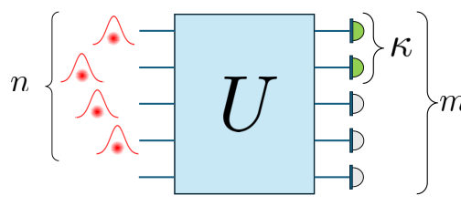
<figcaption class="paper-figure-caption"><b>Fig 1.</b> FIG. 1. Schematic representation of an interferometric con- figuration in which n single photons are injected into the first n spatial modes of an m-mode linear interferometer U. The time delay between the photons (viewed as an internal degree of freedom) is one possible source of distinguishability. After propagating through the interferometer, the detectors mea- sure the spatial modes occupied by the photons regardless of their time of arrival (which is not resolved). Our analysis fo- cuses on the probability Pκ that all n photons are detected in a subset κ of the output modes (see green detectors).</figcaption>
</figure>
<figure class="paper-figure-card">
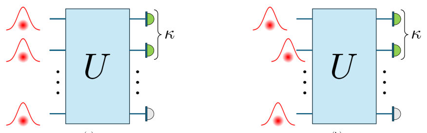
<figcaption class="paper-figure-caption"><b>Fig 2.</b> FIG. 2. Illustration of the anomalous bunching phenomenon through a comparison of two scenarios. (a) In the first scenario, the photons have identical internal states and arrive simultaneously at the interferometer. (b) In the second scenario, the interferometer is unchanged, but the photons are partially distinguishable in an internal degree of freedom, here represented by different time delays. This temporal mismatch is only a concrete example; the same mechanism may arise from other internal degrees of freedom. Since partial distinguishability typically reduces interference, one might expect the bunching probability in the second scenario to be lower than in the first one. However, by...</figcaption>
</figure>
<figure class="paper-figure-card">
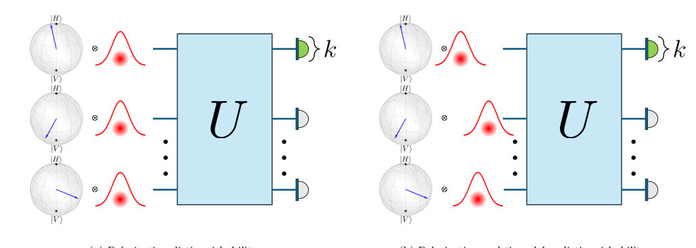
<figcaption class="paper-figure-caption"><b>Fig 3.</b> FIG. 3. Interferometric configurations illustrating the facet of anomalous bunching discussed in Sec. IV B through the comparison of two scenarios. (a) The first configuration corresponds to single-mode photon bunching in the first output mode. The photons arrive simultaneously at the interferometer but differ in polarization. Distinguishability therefore arises solely from this degree of freedom. (b) In the second configuration, the interferometer and the polarization states remain unchanged, but the photons additionally differ in their arrival times. One might expect that introducing an additional internal degree of freedom can only reduce single-mode bunching, since it reduces the...</figcaption>
</figure>
<figure class="paper-figure-card">
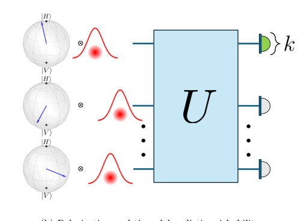
<figcaption class="paper-figure-caption"><b>Fig 4.</b> Fig. 3 provides an example of a physical setting in which the introduction of a time delay between the pho- tons can surprisingly increase the single-mode bunching probability. This could in principle be realized via the counterexample from [20], which focuses on Gram ma- trices realizable by time delays; however, the example found would require a 16-photon experiment. In Ap- pendix C, we present a simpler example based on the independent manipulation of polarization and time-bin degrees of freedom, and we provide the explicit internal state preparations of seven photons that would lead to this effect. We also compute the values of the resulting bunching probabilities using the Fourier...</figcaption>
</figure>
<figure class="paper-figure-card">
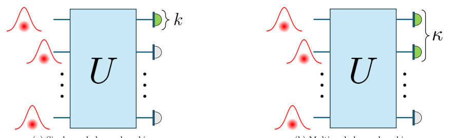
<figcaption class="paper-figure-caption"><b>Fig 5.</b> FIG. 4. Comparison of two interferometric configurations illustrating the facet of anomalous bunching discussed in Sec. IV C. In contrast to the previous facets, the comparison here concerns the quantum enhancement factor, i.e., the ratio of the quantum bunching probability to its classical counterpart, rather than the bunching probability itself. (a) The first configuration corresponds to single-mode boson bunching in a given output mode k, with partial internal distinguishability, here illustrated by time delays between the photons. (b) In the second scenario, the time delays between the photons remain unchanged, but we consider multimode boson bunching into a subset κ of output modes. In...</figcaption>
</figure>
</div>

<p><strong>Summary.</strong> The paper develops a unified framework to explain anomalous boson bunching in multi-mode interferometers. It shows that the phenomenon is dictated by the 'total indistinguishability' combining spatial and internal degrees of freedom. This theory clarifies how partial distinguishability can paradoxically enhance quantum interference effects compared to fully identical photons.</p>
<p><strong>Why it may be interesting.</strong> This work provides a rigorous theoretical tool—the total indistinguishability measure—to understand non-intuitive quantum interference effects in photonics, extending beyond simple single-parameter measures of distinguishability.</p>
<details>
<summary>Detailed structure</summary>
<p><strong>Main problem.</strong> The paper addresses anomalous boson bunching, a quantum interference effect where partially distinguishable photons show higher bunching probability than fully indistinguishable ones. The core goal is to provide a unified theoretical framework explaining this anomaly.</p>
<p><strong>Main result.</strong> Boson bunching is governed by the total indistinguishability of the postselected output state, which combines internal and spatial degrees of freedom. This framework reveals that adding independent sources of distinguishability can enhance multimode or single-mode bunching probabilities.</p>
<p><strong>Method.</strong> The analysis uses second quantization formalism applied to an $m$-mode linear interferometer, calculating the multimode bunching probability ($P_\kappa$) using the permanent function of matrices derived from spatial and internal state overlaps.</p>
<p><strong>Model / system.</strong> The system is modeled as $n$ single bosons injected into an $m$-mode linear interferometer. Photons possess both spatial (mode) and internal degrees of freedom (e.g., polarization, time delay).</p>
<p><strong>Key observables.</strong> Multimode bunching probability ($P_\kappa$), quantum enhancement factor, and the distinguishability matrices ($\mathbf{S}_{int}$ and $\mathbf{H}$).</p>
<p><strong>Important parameters / regimes.</strong> The number of photons ($n$), the number of output modes ($m$), and the specific nature/number of independent internal degrees of freedom.</p>
<p><strong>Assumptions / limitations.</strong> The analysis assumes the input state is separable across spatial and internal degrees of freedom, allowing for factorization into product matrices for calculation.</p>
<p><strong>Figures summary.</strong> Figures schematically illustrate the interferometer setup and compare bunching probabilities in scenarios with identical versus partially distinguishable internal states to demonstrate anomalous enhancement.</p>
<p><strong>Paper structure.</strong> The paper builds from defining the problem (anomalous bunching) to reformulating the governing principle using 'total indistinguishability.' It then derives mathematical expressions for $P_\kappa$ and presents multiple facets of the anomaly, including enhancements from adding independent sources of distinguishability.</p>
</details>
<details>
<summary>Abstract</summary>
<p>Anomalous bunching is a paradoxical quantum interferometric phenomenon in which partially distinguishable photons exhibit a higher probability of bunching into two or more modes than fully indistinguishable photons [Nat. Photonics 17, 702 (2023)]. While this effect is directly linked to violations of certain conjectures on matrix permanents, the mechanism underlying the anomaly is not yet fully understood. Here, we show that boson bunching is governed not by internal indistinguishability alone, but by the total indistinguishability of the postselected output state. Total indistinguishability combines the internal degrees of freedom, such as polarization or arrival time, with the spatial degrees of freedom of their wave functions restricted to the measured output modes of the interferometer. This reformulation preserves the expected connection between boson bunching and total indistinguishability, while clarifying how anomalous bunching can arise. It also reveals several additional facets of the same phenomenon, which are captured within a unified framework. In particular, we exhibit situations in which adding an independent source of distinguishability, either internal or spatial, can enhance multimode or even single-mode bunching probabilities, offering new insights into the subtle role of distinguishability in multiphoton interference.</p>
</details>
<p><sub><a href="#top">↑ back to top</a></sub></p>

<p><a id="paper-2607.19466"></a></p>
<h3 id="anyon-crystals-and-hall-crystals-in-a-periodic-potential"><a href="http://arxiv.org/abs/2607.19466v1">Anyon Crystals and Hall Crystals in a Periodic Potential</a></h3>
<p><strong>Authors:</strong> Sayak Bhattacharjee, Julian May-Mann, Srinivas Raghu<br>
<strong>Type:</strong> theory · <strong>Category:</strong> strongly correlated electrons · <strong>PDF:</strong> <a href="https://arxiv.org/pdf/2607.19466v1">https://arxiv.org/pdf/2607.19466v1</a><br>
<strong>Analysis basis:</strong> full PDF text, analyzed in chunks
<strong>Topic relevance:</strong> <code>analog quantum simulation</code> <strong>3/5</strong> · <code>Frenkel-Kontorova</code> <strong>2/5</strong> · <code>Keldysh / 2PI / non-Gaussian methods</code> <strong>1/5</strong> · <code>driven-dissipative phase transition</code> <strong>1/5</strong> · <code>entanglement &amp; information structure</code> <strong>1/5</strong></p>
<div class="figure-strip-hint">↔ Scroll figures horizontally</div>
<div class="paper-figures-scroll">
<figure class="paper-figure-card">
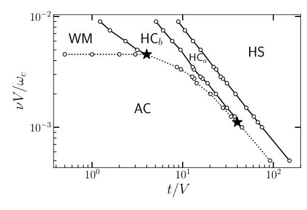
<figcaption class="paper-figure-caption"><b>Fig 1.</b> FIG. 2. Phase diagram of the Hamiltonian in Eq. 3 in the t/V −νV/ωc plane on a log-log plot for ¯ρ = 9/16, ν = 1/3 and U →∞. HCa and HCb denote Hall crystals—HCa is a checkerboard Hall crystal, while HCb has a super-unit cell of 2 × 2, just as the Wigner-Mott (WM) insulator. HS de- notes the fractional Hall state. The crystals are sketched in Fig. 3(a)-(d). The stars denote critical points. The dotted (solid) lines are first-order (continuous) transitions.</figcaption>
</figure>
<figure class="paper-figure-card">
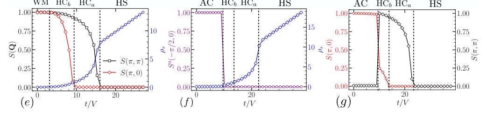
<figcaption class="paper-figure-caption"><b>Fig 2.</b> FIG. 3. (a), (b) and (c) depict schematic super-unit cells of the Hall crystals (HCa, HCb) and the Wigner-Mott insulator at ¯ρ = 9/16 and ν = 1/3 respectively. The site densities are colored as per the color bar. In the WM insulator, the densities are 1, 1/4 and 0. The arrows denote the direction of the orbital currents at the center of the bonds. (d) depicts a schematic 5 × 5 cell of the AC at ¯ρ = 9/16 and ν = 1/3. The grey plaquettes indicate one of two candidate locations of the quasiholes and quasiparticles respectively, with the circular arrow denoting the vorticity. An energetically degenerate location for each pair is π/2 rotated with respect to the inversion center at the density...</figcaption>
</figure>
<figure class="paper-figure-card">
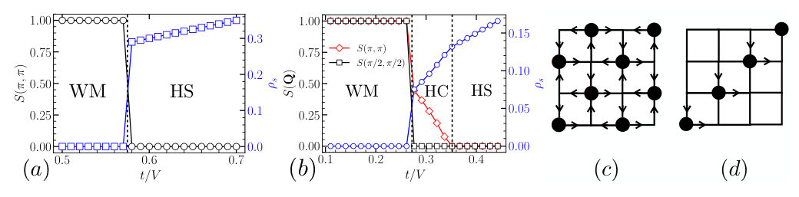
<figcaption class="paper-figure-caption"><b>Fig 3.</b> FIG. 4. (a) Order parameters at ¯ρ = 1/2. [S(π, π) (black, circle), ρs (blue, square)]. (b) Order parameters at ¯ρ = 1/4. [S(π, π) (red, diamond), S(π/2, π/2) (black, square), ρs (blue, circle)]. The structure factors are normalized with respect to their maximum value. (c) Checkerboard WM insulator at ¯ρ = 1/2. (d) Diagonal striped WM insulator at ¯ρ = 1/4. Empty sites denote zero density, black circles denote unit density. The arrows on the links denote the direction of the orbital currents.</figcaption>
</figure>
<figure class="paper-figure-card">
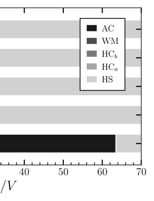
<figcaption class="paper-figure-caption"><b>Fig 4.</b> FIG. 5. ν dependence of the ¯ρ = 9/16 phases at fixed νV/ωc = 0.0033.</figcaption>
</figure>
</div>

<p><strong>Summary.</strong> This paper theoretically explores the emergence of Anyon Crystals and Hall Crystals in electron systems confined by periodic potentials under strong magnetic fields. By modeling the system using composite bosons and mean-field theory, the authors predict that strong interactions can stabilize a novel AC phase characterized by ordered anyons. The findings map out complex phase diagrams detailing transitions between superfluid, supersolid, and various insulating crystalline states.</p>
<p><strong>Why it may be interesting.</strong> The work provides a detailed theoretical framework for understanding how topological order (like fractional quantum Hall states) can coexist with broken translational symmetry to form exotic crystalline phases hosting anyons. This touches upon fundamental concepts in strongly correlated matter relevant to condensed matter theory.</p>
<details>
<summary>Detailed structure</summary>
<p><strong>Main problem.</strong> The study investigates quantum phases of matter, specifically Anyon Crystals (ACs) and Hall Crystals (HCs), that emerge in two-dimensional electron systems subjected to both strong magnetic fields and periodic potentials.</p>
<p><strong>Main result.</strong> The authors predict the existence of an Anyon Crystal phase stabilized by strong interactions, which is characterized by a lattice ordering of well-defined anyons, distinct from standard Wigner-Mott insulators.</p>
<p><strong>Method.</strong> The analysis employs mean-field theory using the Gutzwiller variational wavefunction applied to an effective lattice Hamiltonian derived from composite boson theory.</p>
<p><strong>Model / system.</strong> The system is a 2D electron gas in a strong perpendicular magnetic field and a periodic potential. The model uses composite bosons attached to flux quanta, leading to an effective lattice Hamiltonian incorporating two-body, three-body, and current-density interactions.</p>
<p><strong>Key observables.</strong> Superfluid stiffness ($
ho_s$), structure factors ($S(Q)$), and the anyon structure factor $S_{a}(-\pi/2, 0)$.</p>
<p><strong>Important parameters / regimes.</strong> Magnetic filling fraction ($
u$) with odd denominators, ratio of kinetic to interaction energy ($t/V$), and Landau level mixing ($
u V/\omega_c$).</p>
<p><strong>Assumptions / limitations.</strong> The analysis relies on the Gutzwiller mean-field ansatz and uses Ewald summation techniques for handling long-range Coulomb interactions.</p>
<p><strong>Figures summary.</strong> Figures illustrate phase diagrams showing transitions between Quantum Hall States (HS), Hall Crystals (HC), Anyon Crystals (AC), and Wigner-Mott insulators (WM) as a function of interaction ratios. Schematics show the super-unit cells for these different crystalline phases.</p>
<p><strong>Paper structure.</strong> The paper proceeds by deriving the effective lattice Hamiltonian from continuum theory, calculating various interaction energies using Ewald summation, performing mean-field analysis via the Gutzwiller ansatz, and mapping out phase diagrams based on key observables like superfluid stiffness and structure factors.</p>
</details>
<details>
<summary>Abstract</summary>
<p>We obtain integer and fractional quantum Hall crystals as ground states of a two-dimensional electron system subject to a strong perpendicular magnetic field and a periodic potential. For certain fractional states, we show that the Hall crystal can constitute an anyon crystal, with a periodic ordering of well-defined anyons. We find that the latter states can be stabilized at odd denominator Landau level filling fractions when Landau level mixing is sufficiently weak, and near half-filling of the underlying lattice. These phases are obtained from a mean-field analysis of an effective lattice model of bosons attached to an odd number of flux quanta, which transmutes their statistics to that of electrons. In boson coordinates, the Hall crystal is a supersolid: a superfluid with charge order. Under strong interactions, vortex-anti-vortex pairs spontaneously nucleate in the supersolid, realizing a crystalline state of anyons.</p>
</details>
<p><sub><a href="#top">↑ back to top</a></sub></p>

<p><a id="paper-2607.19465"></a></p>
<h3 id="quantum-mott-semimetal-in-a-one-dimensional-hubbard-mode"><a href="http://arxiv.org/abs/2607.19465v1">Quantum Mott semimetal in a one-dimensional Hubbard mode</a></h3>
<p><strong>Authors:</strong> Boran Zhou, Taige Wang, Ya-Hui Zhang<br>
<strong>Type:</strong> theory · <strong>Category:</strong> strongly correlated electrons · <strong>PDF:</strong> <a href="https://arxiv.org/pdf/2607.19465v1">https://arxiv.org/pdf/2607.19465v1</a><br>
<strong>Analysis basis:</strong> full PDF text, analyzed in chunks
<strong>Topic relevance:</strong> <code>analog quantum simulation</code> <strong>3/5</strong> · <code>Keldysh / 2PI / non-Gaussian methods</code> <strong>1/5</strong> · <code>Kondo &amp; dissipative impurity</code> <strong>1/5</strong> · <code>entanglement &amp; information structure</code> <strong>1/5</strong> · <code>methods for driven-dissipative</code> <strong>1/5</strong> · <code>non-equilibrium dynamics</code> <strong>1/5</strong></p>
<div class="figure-strip-hint">↔ Scroll figures horizontally</div>
<div class="paper-figures-scroll">
<figure class="paper-figure-card">
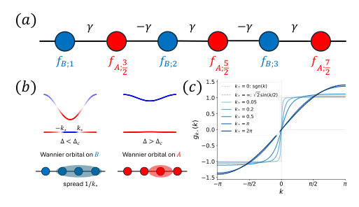
<figcaption class="paper-figure-caption"><b>Fig 1.</b> FIG. 1. Schematic illustration of the one-dimensional two- orbital model and its active-band Wannier orbital. (a) A sublattice and B sublattice are shown as red and blue cir- cles respectively. (b) Representative lower-band structures and orbital characters on the two different Wannier orbitals. For ∆&lt; ∆c, the lower band has a B-centered Wannier or- bital with a characteristic spread ∼1/k∗. For ∆&gt; ∆c, the lower band has an A-centered Wannier orbital. (c) Form fac- tor g(k) of the projected fermion, defined through ˜fA;k;σ = −igk∗(k)ck;σ. In the large-k∗limit, gk∗(k) = √</figcaption>
</figure>
<figure class="paper-figure-card">
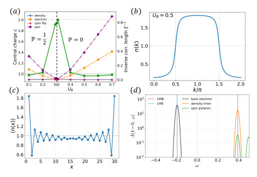
<figcaption class="paper-figure-caption"><b>Fig 2.</b> FIG. 3. (a) Phase diagram as a function of U at fixed t = −0.3, UA = 1, JA = 0, J = U, χ = 1000: central charge c (green, left axis), extracted from the finite-entanglement scal- ing S = c 6 ln ξ, together with the inverse correlation lengths ξ−1 (right axis) of the density, single-electron, spin-flip, and pair channels of the transfer matrix. On both sides of the transition the system is a Mott insulator with gapless density and spin-flip modes (ξ−1 ≈0) but gapped electron and pair excitations, giving c = 1. At U ≈0.3 the electron and pair gaps close simultaneously and c →2, marking a direct con- tinuous transition between a topological Mott insulator with quantized polarization P = 1 2...</figcaption>
</figure>
<figure class="paper-figure-card">
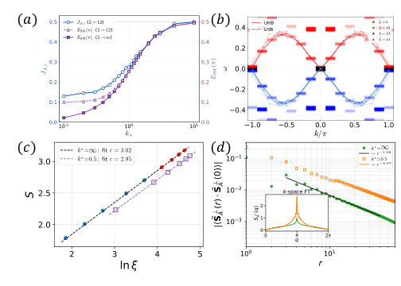
<figcaption class="paper-figure-caption"><b>Fig 3.</b> FIG. 2. (a) Critical antiferromagnetic exchange JA,c for melting the ferromagnetic ground state as a function of k∗. The spin-wave energy at momentum π, ESW(π) is shown for comparison. The close agreement indicates that the critical JA is related to the spin wave bandwidth. When L = 12, the critical JA,c saturate to 0.5 when k∗→∞. (b) ED hubbard bands at t = 0, UA = 1, JA = 4 3, k∗= ∞. (c)(d) infinite DMRG (iDMRG) calculations at the representative point U = 1 15, UA = 1, J = 0, JA = 4</figcaption>
</figure>
<figure class="paper-figure-card">
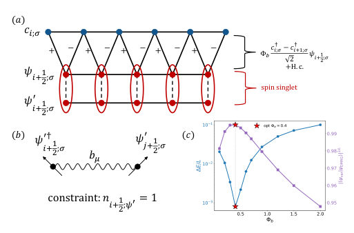
<figcaption class="paper-figure-caption"><b>Fig 4.</b> FIG. 4. (a)(b) The illustration of the ancilla wavefunctions. In (a), we show that physical electron (blue) resides at site i, while the two spinful ancilla fermions ψ and ψ′ reside at site i + 1</figcaption>
</figure>
<figure class="paper-figure-card">
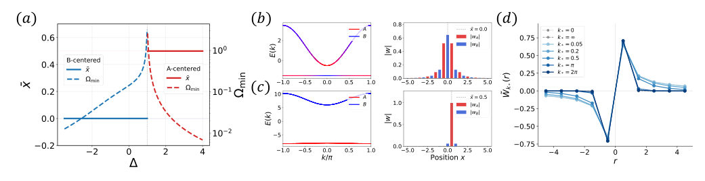
<figcaption class="paper-figure-caption"><b>Fig 5.</b> FIG. 5. Wannier representation of the lower band. We choose tA = 0, tB = −1, γ = 1 in the calculations. (a) Wannier center ¯x and minimal spread Ωmin as functions of the sublattice potential ∆. Inversion symmetry pins the Wannier center either to the B sublattice, ¯x = 0, or to the A sublattice, ¯x = 1</figcaption>
</figure>
</div>

<p><strong>Summary.</strong> This work theoretically establishes a novel Quantum Mott semimetal phase in a 1D Hubbard model, providing evidence for its existence and characterizing its low-energy excitations. By combining DMRG, RG theory, and spectral analysis, the authors map out how this state transitions between different insulating phases based on symmetry breaking. It offers a crucial theoretical framework for understanding correlated physics analogous to that found in materials like twisted bilayer graphene.</p>
<p><strong>Why it may be interesting.</strong> The detailed theoretical mapping using RG flow equations to determine the stability of exotic quantum phases like Mott semimetals is highly relevant for understanding strongly correlated materials where simple mean-field approaches fail.</p>
<details>
<summary>Detailed structure</summary>
<p><strong>Main problem.</strong> The study aims to demonstrate a quantum Mott semimetal phase and understand its connection to physics observed in twisted bilayer graphene (TBG). It also characterizes the low-energy effective theory of this state.</p>
<p><strong>Main result.</strong> The authors provide evidence for a stable Mott semimetal ground state stabilized by an antiferromagnetic coupling, which hosts a spinful Dirac fermion coexisting with a neutral spin mode. They also map out transitions between different Mott insulating phases based on symmetry breaking.</p>
<p><strong>Method.</strong> The research employs advanced theoretical techniques including Density Matrix Renormalization Group (DMRG), Exact Diagonalization (ED), Bosonization, and Renormalization Group (RG) analysis to analyze the system's ground state properties.</p>
<p><strong>Model / system.</strong> The model is a one-dimensional spinful Hubbard model derived from projecting an $f$-orbital Hubbard interaction onto an active flat band. It incorporates hopping ($t$), on-site interactions ($U$), and inter-site exchange couplings ($J$).</p>
<p><strong>Key observables.</strong> Central charge (c), spin correlator decay ($\sim r^{-1}$), spectral functions $A(k, \omega)$, and many-body polarization ($P$).</p>
<p><strong>Important parameters / regimes.</strong> The momentum scale $k^*$, the Hubbard interaction $U$, and the inter-site coupling $J$ are crucial parameters controlling the phase transitions.</p>
<p><strong>Assumptions / limitations.</strong> Key assumptions include projecting the system onto a flat band, using approximations like the Hubbard-I approximation for spectral calculations, and assuming stability within numerical precision limits for DMRG/RG analysis.</p>
<p><strong>Figures summary.</strong> Figures illustrate schematic models (two-orbital setup), phase diagrams showing transitions between different Mott phases ($P=1/2$ vs $P=0$), and quantitative results like entanglement entropy confirming central charge values.</p>
<p><strong>Paper structure.</strong> The paper progresses by first establishing the model from a two-orbital system, then using DMRG/ED to identify the semimetal phase characterized by $c=3$. Subsequent analysis uses low-energy effective theories (Bosonization/RG) and spectral function calculations to map out stability boundaries and understand the nature of the gapless excitations.</p>
</details>
<details>
<summary>Abstract</summary>
<p>Mott physics in topological bands has recently attracted considerable attention, particularly in the context of twisted bilayer graphene (TBG). However, the essential ingredients for stabilizing this physics remain unclear. Here, we demonstrate a quantum Mott semimetal phase as the ground state within a one-dimensional spinful Hubbard model featuring only one orbital per unit cell, protected by inversion and particle-hole symmetries. We start from a two-orbital model where a localized $f$ orbital on the A sublattice hybridizes with a delocalized $c$ orbital on the B sublattice. Projecting the $f$-orbital Hubbard $U$ onto the active flat band yields a lattice model with Wannier orbitals centered on the B sublattice. Similar to TBG, a momentum-space scale $k_*$ emerges, setting the interaction range in the projected model to $1/k_*$. While the ground state is ferromagnetic with only the Hubbard $U$, introducing an inter-site antiferromagnetic spin coupling $J$ stabilizes a Mott semimetal$^*$ phase with a central charge $c=3$. Using exact diagonalization (ED) and density matrix renormalization group (DMRG) methods, we show that this phase hosts a spinful Dirac fermion coexisting with a neutral spin mode -- analogous to the fractionalized Fermi liquid (FL$^*$) phase in higher dimensions. Furthermore, breaking particle-hole (PH) symmetry via dispersion transforms the Mott semimetal into a Mott insulator, which is separated from a distinct Mott insulating phase by a continuous transition with a polarization jump of $1/2$. Our work provides the first unbiased evidence of a Mott semimetal ground state and demonstrates that this 1D model captures some essential aspects of TBG physics, despite lacking a Wannier obstruction.</p>
</details>
<p><sub><a href="#top">↑ back to top</a></sub></p>

<p><a id="paper-2607.19663"></a></p>
<h3 id="raman-spectroscopy-of-van-der-waals-topological-magnet-gdgai"><a href="http://arxiv.org/abs/2607.19663v1">Raman spectroscopy of van der Waals topological magnet GdGaI</a></h3>
<p><strong>Authors:</strong> Nan Jiang, Yijin Zhang, Yujie Xia, Tomo Higashihara, Ryutaro Okuma, Jun-ichi Yamaura, Yoshinori Okada, Kenji Watanabe, Takashi Taniguchi, Tiantian Zhang, Tomoki Machida, Yasuhiro Niimi<br>
<strong>Type:</strong> both · <strong>Category:</strong> strongly correlated electrons · <strong>PDF:</strong> <a href="https://arxiv.org/pdf/2607.19663v1">https://arxiv.org/pdf/2607.19663v1</a><br>
<strong>Analysis basis:</strong> full PDF text, analyzed in chunks
<strong>Topic relevance:</strong> <code>exotic spin models in light-matter</code> <strong>3/5</strong> · <code>spintronics-quantum-optics interface</code> <strong>3/5</strong> · <code>analog quantum simulation</code> <strong>1/5</strong> · <code>driven-dissipative phase transition</code> <strong>1/5</strong></p>
<div class="figure-strip-hint">↔ Scroll figures horizontally</div>
<div class="paper-figures-scroll">
<figure class="paper-figure-card">
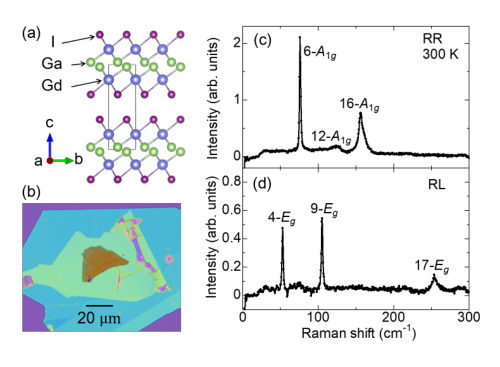
<figcaption class="paper-figure-caption"><b>Fig 1.</b> FIG. 1. (a) Crystal structure of GdGaI. The black solid line represents the unit cell of GdGaI. (b) An optical microscope image of GdGaI flake No. 1 sandwiched by hBN flakes. (c,d) Polarized Raman spectra of the GdGaI flake No. 1 at 300 K measured with (c) RR and (d) RL scattering geometries.</figcaption>
</figure>
<figure class="paper-figure-card">
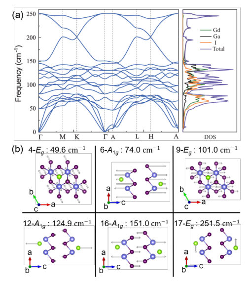
<figcaption class="paper-figure-caption"><b>Fig 2.</b> FIG. 2. (a) (a) Calculated phonon dispersion relations of GdGaI, together with the total phonon density of states (DOS) and the atom-projected phonon DOS . (b) Schematic illustration of Raman-active phonon modes in GdGaI at 300 K.</figcaption>
</figure>
<figure class="paper-figure-card">
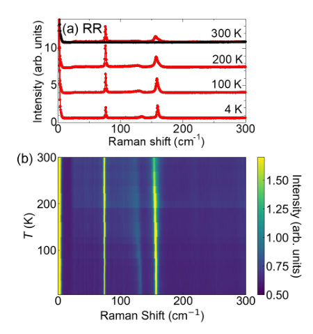
<figcaption class="paper-figure-caption"><b>Fig 3.</b> FIG. 3. (a) Polarized Raman spectra of GdGaI at several temperatures in the RR scattering geometry. The black trace represents the background signal measured on a substrate re- gion devoid of GdGaI. (b) False-color map of the RR-polarized Raman response of GdGaI measured as a function of temper- ature.</figcaption>
</figure>
<figure class="paper-figure-card">
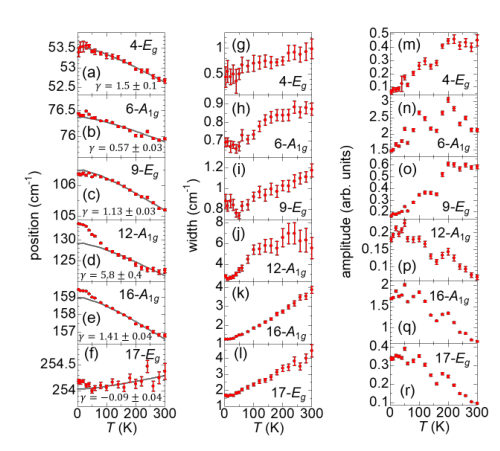
<figcaption class="paper-figure-caption"><b>Fig 4.</b> FIG. 4. Temperature dependence of the fitted (a–f) peak position, (g–l) full width at half maximum, and (m–r) am- plitude for each Raman mode. All parameters were obtained from least-squares fits to Lorentzian profiles. Error bars de- note 1σ uncertainties from the fit.</figcaption>
</figure>
<figure class="paper-figure-card">
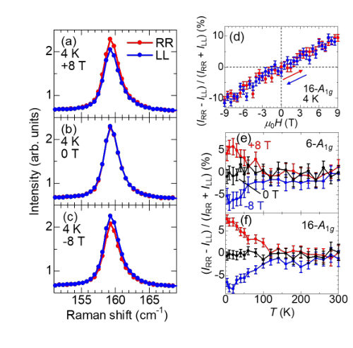
<figcaption class="paper-figure-caption"><b>Fig 5.</b> FIG. 5. (a-c) Polarized Raman spectra of the 16-A1g phonon mode in GdGaI at 4 K, measured in RR (red) and LL (blue) scattering geometries under (a) 8 T, (b) 0 T, and (c) -8 T. (d) Magnetic-field dependence of the degree of circular po- larization at T = 1.8 K for the 16-A1g phonon mode. (e,f) Temperature dependence of the degree of circular polarization for the (e) 6-A1g and (f) 16-A1g modes under 8 T (red), 0 T (black), and -8 T (blue). Error bars denote 1σ uncertainties propagated from the Lorentzian fits.</figcaption>
</figure>
</div>

<p><strong>Summary.</strong> This paper uses polarization-resolved Raman spectroscopy on GdGaI to investigate the nature of its insulating state. By showing no evidence of lattice distortion characteristic of CDW systems, they argue for an electronic origin for band reconstruction. Furthermore, observing magnetic field-dependent circular dichroism confirms spin-phonon coupling, positioning GdGaI as a model system where excitonic order and magnetism interact via phonons.</p>
<p><strong>Why it may be interesting.</strong> The work provides a direct experimental link between lattice vibrations (phonons) and emergent electronic/magnetic orders (excitonic insulators, antiferromagnetism), which is crucial for understanding strongly correlated materials where electron-lattice interactions are key.</p>
<details>
<summary>Detailed structure</summary>
<p><strong>Main problem.</strong> To distinguish between excitonic insulator (EI) transitions and conventional charge-density-wave (CDW) systems, both involving band reconstruction in the van der Waals magnet GdGaI.</p>
<p><strong>Main result.</strong> The absence of soft modes or zone folding supports an electronically driven origin for band reconstruction, while circular dichroism reveals spin-phonon coupling linked to short-range antiferromagnetic correlations.</p>
<p><strong>Method.</strong> Polarization-resolved Raman spectroscopy combined with symmetry analysis and DFT calculations were used to probe lattice vibrations under varying magnetic fields and temperatures.</p>
<p><strong>Model / system.</strong> The study focuses on the van der Waals topological magnet GdGaI, investigating its interplay between excitonic order, magnetism, and phonon dynamics. The theoretical framework involves analyzing Raman tensor components sensitive to time-reversal symmetry breaking.</p>
<p><strong>Key observables.</strong> Raman-active phonons ($A_{1g}, E_g$), degree of circular dichroism ($    ext{RR}/    ext{LL}$ contrast), temperature evolution of polarization, and phonon frequency shifts relative to thermal expansion models.</p>
<p><strong>Important parameters / regimes.</strong> Temperature range (down to 4 K) and out-of-plane magnetic field strength ($\pm 9$ T).</p>
<p><strong>Assumptions / limitations.</strong> The analysis assumes that the absence of spectral anomalies implies lattice distortions are below experimental sensitivity, ruling out a CDW mechanism.</p>
<p><strong>Figures summary.</strong> Figures show polarized Raman spectra at various temperatures and magnetic fields, demonstrating both the lack of expected softening/folding (Fig. 3) and the clear field-dependent circular dichroism in $A_{1g}$ modes (Fig. 5).</p>
<p><strong>Paper structure.</strong> The paper progresses by first establishing the phonon spectrum via DFT and initial measurements; it then uses temperature dependence to rule out CDW mechanisms, followed by magnetic field studies to reveal spin-phonon coupling signatures.</p>
</details>
<details>
<summary>Abstract</summary>
<p>We report polarization-resolved Raman spectroscopy of a van der Waals compound GdGaI that is a candidate for excitonic insulators. By combining the symmetry analysis with density functional theory calculations, we identify six Raman-active phonons. The spectra exhibit only the expected anharmonic hardening down to 4 K: no additional peaks, no soft modes, and no signatures of zone folding are observed. This result indicates that any lattice distortion is below our experimental sensitivity, supporting an electronically driven origin for the band reconstruction reported by angle-resolved photoemission spectroscopy rather than an electron-phonon-driven mechanism. Moreover, we observe a pronounced circular dichroism of the $A_{1g}$ modes under an out-of-plane magnetic field. Based on symmetry considerations, we attribute this dichroic response to chiral $A_{1g}$ phonons with opposite angular momenta generated by spin-phonon coupling in the time-reversal-broken state. The temperature evolution of the degree of circular polarization further suggests that circularly polarized Raman spectroscopy detects the emergence of short-range antiferromagnetic correlations. Our results highlight GdGaI as a promising platform in which excitonic order, magnetism, and circularly polarized phonons can be intertwined, and demonstrate that circular-polarization Raman provides a sensitive probe of spin-phonon coupling in excitonic systems.</p>
</details>
<p><sub><a href="#top">↑ back to top</a></sub></p>

<p><a id="paper-2607.19871"></a></p>
<h3 id="a-reduction-scheme-for-general-order-ising-like-hamiltonians-in-quantum-heuristic-solvers"><a href="http://arxiv.org/abs/2607.19871v1">A reduction scheme for general-order Ising-like Hamiltonians in quantum heuristic solvers</a></h3>
<p><strong>Authors:</strong> Chengsi Mao, Pavel Mosharev, Yao Wang, Man-Hong Yung<br>
<strong>Type:</strong> theory · <strong>Category:</strong> disordered systems and neural networks · <strong>PDF:</strong> <a href="https://arxiv.org/pdf/2607.19871v1">https://arxiv.org/pdf/2607.19871v1</a><br>
<strong>Analysis basis:</strong> full PDF text, analyzed in chunks
<strong>Topic relevance:</strong> <code>analog quantum simulation</code> <strong>3/5</strong> · <code>entanglement &amp; information structure</code> <strong>1/5</strong> · <code>exotic spin models in light-matter</code> <strong>1/5</strong> · <code>methods for driven-dissipative</code> <strong>1/5</strong> · <code>non-equilibrium dynamics</code> <strong>1/5</strong></p>
<div class="figure-strip-hint">↔ Scroll figures horizontally</div>
<div class="paper-figures-scroll">
<figure class="paper-figure-card">
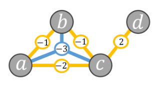
<figcaption class="paper-figure-caption"><b>Fig 1.</b> Figure 1: Illustration of a hypergraph representing a higher-order Ising-like Hamiltonian. The numbers on the (hyper)edges denote the corresponding weights.</figcaption>
</figure>
<figure class="paper-figure-card">
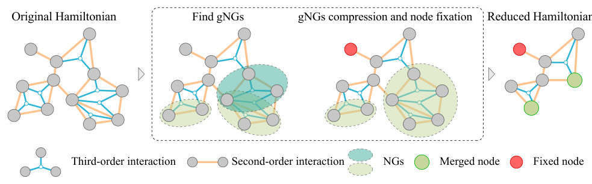
<figcaption class="paper-figure-caption"><b>Fig 2.</b> Figure 2: Diagrammatic illustration of the process of GeneralHare on higher-order Ising-like Hamiltonians. Here we set the highest order to be 𝑀= 3 as an example.</figcaption>
</figure>
<figure class="paper-figure-card">
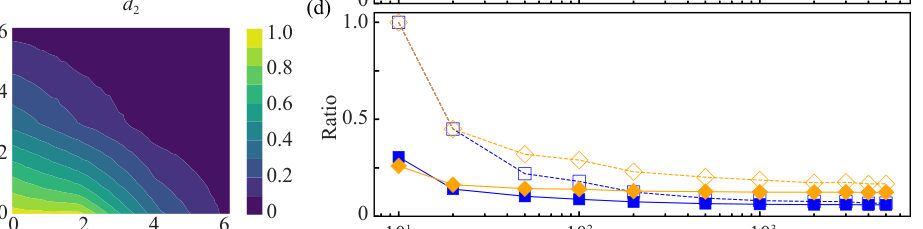
<figcaption class="paper-figure-caption"><b>Fig 3.</b> Figure 3: Reduction ratio on synthetic data (The higher the better.) (a) Reduction ratio of third-order ER-like hypergraphs using GeneralHare and how it changes with the increase of second- and third-order node degree 𝑑2, 𝑑3, averaged over 100 random samples. The node number is 𝑛= 200. For each hyperedge, 𝐽is an integer chosen uniformly in {−4, −3, −2, −1, 1, 2, 3, 4}. (b) Same as (a), but for third-order SF-like hypergraphs. (c) Reduction ratio with respect to node number on third-order weighted (orange line) and unweighted (blue line) SF-like hypergraphs, with 𝑑2 = 4, 𝑑3 = 2. For weighted hypergraph, 𝐽is an integer chosen uniformly in {−4, −3, −2, −1, 1, 2, 3, 4} for all hyperedges, while...</figcaption>
</figure>
<figure class="paper-figure-card">
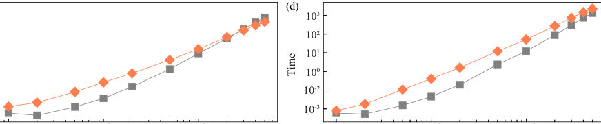
<figcaption class="paper-figure-caption"><b>Fig 4.</b> Figure 4: Performance comparison of GeneralHare and FastHare on synthetic second-order Ising Hamiltonians. (a) Reduction ratio of ER graphs; (b) same as (a), but for SF-like graphs. (c) Processing time for ER graphs; (d) same as (c), but for SF-like graphs. Solid markers denote the results averaged over 100 random instances at each problem size, and the corresponding hollow markers in (a) and (b) denote the highest reduction ratio obtained for these instances. ‘FH’ means FastHare, and ‘GH’ means GeneralHare.</figcaption>
</figure>
<figure class="paper-figure-card">
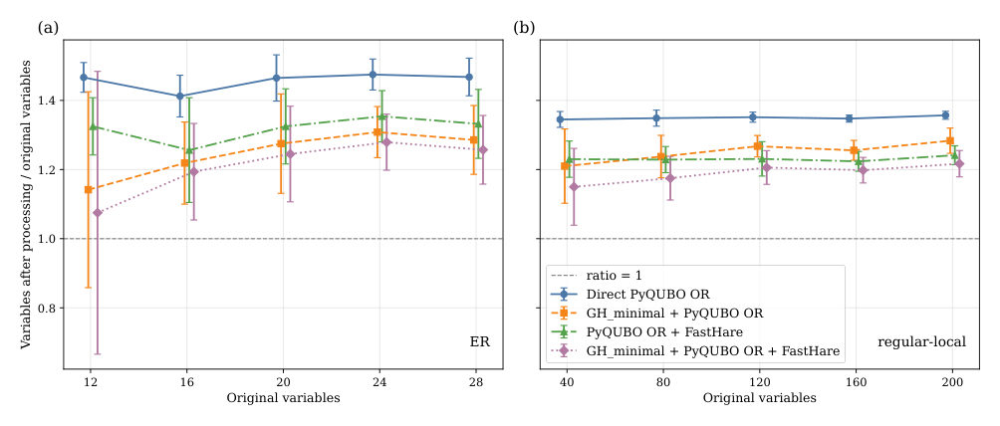
<figcaption class="paper-figure-caption"><b>Fig 5.</b> Figure 5: Variable overhead of quadratization and reduction pipelines. We use Python demonstrator implementation GH_minimal, and report ratio of the number of variables after preprocessing to the original number of variables in the higher-order Ising Hamiltonian. Markers show averages over ten independently generated instances, and error bars show one standard deviation. We compare direct PyQUBO order reduction (OR), GH_minimal followed by PyQUBO OR, PyQUBO OR followed by FastHare, and the combined GH_minimal + PyQUBO OR + FastHare pipeline. The dashed horizontal line marks ratio 1, corresponding to no net variable overhead relative to the original higher-order problem size. (a) Ratio on...</figcaption>
</figure>
</div>

<p><strong>Summary.</strong> This paper introduces GeneralHare, a novel Hamiltonian reduction framework designed to handle general-order Ising-like Hamiltonians beyond the scope of existing second-order methods. By generalizing non-separability theory, it effectively reduces complex optimization problems defined on hypergraphs into smaller, equivalent forms. This advancement provides a crucial preprocessing step for applying quantum heuristic solvers to more realistic, higher-order physical models.</p>
<p><strong>Why it may be interesting.</strong> While focused on classical optimization, the underlying mathematical structure—analyzing complex interactions in high-dimensional spin systems—is highly relevant to understanding energy landscapes in quantum many-body physics, particularly those involving higher-order couplings.</p>
<details>
<summary>Detailed structure</summary>
<p><strong>Main problem.</strong> The core problem is developing a Hamiltonian reduction framework for general-order Ising-like Hamiltonians, as existing techniques are limited to second-order interactions while real problems contain higher-order terms.</p>
<p><strong>Main result.</strong> The proposed GeneralHare scheme successfully generalizes non-separability theory to arbitrary orders, achieving superior reduction ratios and performance compared to prior methods like FastHare on synthetic and public hypergraph datasets.</p>
<p><strong>Method.</strong> The authors generalize the concept of 'non-separable groups' to create a generalized non-separable group (gNG) and develop the GeneralHare framework to iteratively detect and merge these constrained spin groups into single variables, thereby reducing the effective problem size.</p>
<p><strong>Model / system.</strong> The model is the general-order Ising-like Hamiltonian defined on hypergraphs, $H(oldsymbol{\sigma}) = \sum J_I \prod_{i \in I} \sigma_i$, which are benchmarked using synthetic (ER/SF) and public network datasets.</p>
<p><strong>Key observables.</strong> Reduction ratio ($r$), solution energy $H(\sigma)$, computational runtime, and final variable count overhead after reduction.</p>
<p><strong>Important parameters / regimes.</strong> The order of the Hamiltonian ($M$), the structure of the hypergraph (e.g., ER-like vs. SF-like), and the candidate-size cutoff parameter ($\xi$).</p>
<p><strong>Assumptions / limitations.</strong> Existing methods are limited to second-order models, and the reconstruction process relies on tracking explicit node maps to ensure ground state correspondence.</p>
<p><strong>Figures summary.</strong> Figures compare reduction ratios and performance (Energy/Runtime) of GeneralHare against FastHare and Order Reduction techniques across various hypergraph types; Figure 1 illustrates the general structure of the higher-order Hamiltonian.</p>
<p><strong>Paper structure.</strong> The paper introduces the limitations of current methods, proposes the generalized non-separable group concept, details the GeneralHare framework for reduction, benchmarks this framework on synthetic and public datasets, and finally evaluates its integration into downstream quantum heuristic solvers (like bSB).</p>
</details>
<details>
<summary>Abstract</summary>
<p>The Ising model is ubiquitous in various optimization problems but notoriously difficult to solve due to combinatorial explosion. In view of this, Hamiltonian reduction is a useful preprocessing technique for reducing the effective problem size before applying heuristic solvers. However, existing reduction techniques mainly target second-order Ising models, whereas many pseudo-Boolean formulations naturally contain higher-order interactions. In this work, we generalize the concept of non-separable groups to arbitrary-order Ising-like models and develop a Hamiltonian reduction framework that iteratively detects and merges constrained spin groups into single variables. We benchmark the reduction on synthetic hypergraphs and higher-order network datasets, and evaluate its integration with downstream order-reduction and solver workflows. Our results establish a foundation for Hamiltonian reduction in higher-order Ising-like optimization problems.</p>
</details>
<p><sub><a href="#top">↑ back to top</a></sub></p>

<p><a id="paper-2607.20094"></a></p>
<h3 id="exact-theory-of-chirality-dependent-p-wave-magnetism-and-edelstein-effect-in-spin-spirals"><a href="http://arxiv.org/abs/2607.20094v1">Exact theory of chirality-dependent p-wave magnetism and Edelstein effect in spin spirals</a></h3>
<p><strong>Authors:</strong> Börge Göbel, Tom G. Saunderson, Freia Opfermann, Lennart Schimpf, Ersoy Şaşıoğlu, Samir Lounis<br>
<strong>Type:</strong> theory · <strong>Category:</strong> strongly correlated electrons · <strong>PDF:</strong> <a href="https://arxiv.org/pdf/2607.20094v1">https://arxiv.org/pdf/2607.20094v1</a><br>
<strong>Analysis basis:</strong> full PDF text, analyzed in chunks
<strong>Topic relevance:</strong> <code>exotic spin models in light-matter</code> <strong>3/5</strong> · <code>spintronics-quantum-optics interface</code> <strong>3/5</strong> · <code>Keldysh / 2PI / non-Gaussian methods</code> <strong>1/5</strong></p>
<div class="figure-strip-hint">↔ Scroll figures horizontally</div>
<div class="paper-figures-scroll">
<figure class="paper-figure-card">
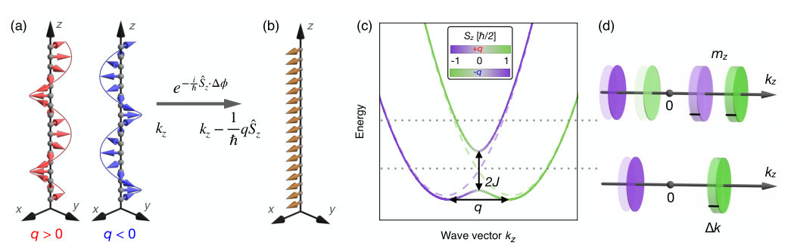
<figcaption class="paper-figure-caption"><b>Fig 1.</b> FIG. 1. Schematic representation of emerging chirality-dependent p-wave magnetism and Edelstein effect based on generalized Bloch theorem. (a) Spin spirals with positive and negative chirality. (b) After transforming into the rotating spin frame, the spatially varying exchange field becomes a uniform ferromagnetic background, while the electronic states acquire a spin- and chirality-dependent momentum shift. (c) Dashed lines: Schematic band structure in the weak-coupling limit, illustrating the rigid momentum shifts of the spin-up and spin-down bands. Solid lines: hybridized bands in the presence of a finite exchange coupling J. The color scale indicates the expectation value of sz. (d)...</figcaption>
</figure>
<figure class="paper-figure-card">
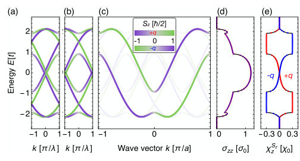
<figcaption class="paper-figure-caption"><b>Fig 2.</b> FIG. 2. Chirality-dependent properties of a spin spiral. (a) Numeri- cal calculation of the band structure with sz(k) as the color scale. (b) After applying a unitary transformation, the band structure and spin texture are shifted by ±q/2 as a function of the effectively shifted wave vector. (c) Band structure of the analytical two-band model reproducing the transformed spectrum. The background shows the transformed numerical band structure of panel (b) in the extended Brillouin zone corresponding to the structural unit cell. (d) Longitu- dinal conductivity and (e) spin Edelstein susceptibility as a function of energy. The color of the data points indicates the chirality. The black curve in...</figcaption>
</figure>
<figure class="paper-figure-card">
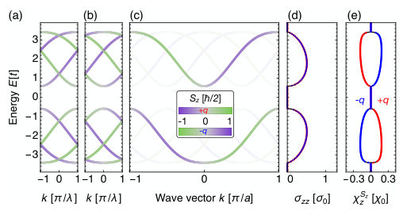
<figcaption class="paper-figure-caption"><b>Fig 3.</b> FIG. 3. Chirality-dependent properties of a spin spiral in the strong- coupling limit J = 2t. (a-c) Band structures with spin texture as in Fig. 2. (d) Longitudinal conductivity and (e) Spin Edelstein suscep- tibility as a function of energy.</figcaption>
</figure>
<figure class="paper-figure-card">
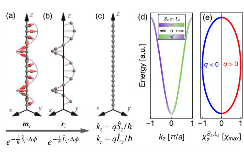
<figcaption class="paper-figure-caption"><b>Fig 4.</b> FIG. 4. Comparison of chiral systems: Spin-dependent physics in a spin spiral versus orbital-dependent physics in a non-magnetic helix. (a) Spin spiral, (b) non-magnetic helix, (c) transformed systems: a ferromagnetic or non-magnetic linear chain. The transformation is a rotation of the local spin or position vector, respectively and can be expressed by a unitary operator that contains the spin or orbital angular momentum operator, respectively, as indicated. For the spin spiral, the strong coupling limit J ≫t has been considered and only the states with parallel spin alignment are analyzed; the system acts effectively like a non-magnet shifted in energy. (d) The band struc- ture is a...</figcaption>
</figure>
</div>

<p><strong>Summary.</strong> This theoretical work proves that magnetic chirality alone can induce spin-momentum locking and generate measurable spin polarization via the Edelstein effect, bypassing the need for intrinsic spin-orbit coupling. By solving a minimal tight-binding model for electrons coupled to a spin spiral, the authors derive exact expressions for transport properties. This establishes spin spirals as fundamental archetypes of chiral magnetism relevant for spintronics.</p>
<p><strong>Why it may be interesting.</strong> It provides a fundamental mechanism for generating chiral electronic responses (like the Edelstein effect) purely from magnetic order, offering an alternative paradigm to SOC mechanisms often studied in AMO or condensed matter systems.</p>
<details>
<summary>Detailed structure</summary>
<p><strong>Main problem.</strong> To analytically demonstrate that spin-momentum locking and chirality-dependent p-wave magnetism can arise solely from magnetic chirality, bypassing the need for intrinsic spin-orbit coupling (SOC).</p>
<p><strong>Main result.</strong> The study derives closed-form expressions showing that a spin spiral generates measurable spin polarization via the Edelstein effect using only its magnetic chirality.</p>
<p><strong>Method.</strong> The authors solve the minimal tight-binding model exactly by employing a generalized Bloch theorem and transforming to a rotating spin frame of reference.</p>
<p><strong>Model / system.</strong> The system consists of conduction electrons coupled to a background forming a non-collinear spin spiral. The analysis uses a tight-binding Hamiltonian incorporating exchange coupling ($J$) and hopping ($t$).</p>
<p><strong>Key observables.</strong> Electrical conductivity ($\sigma_{zz}$), chirality-dependent spin Edelstein susceptibility ($\chi^s_{z}$), and the resulting $p$-wave magnetism characterized by $\mathbf{s}(\mathbf{k}) = -\mathbf{s}(-\mathbf{k})$.</p>
<p><strong>Important parameters / regimes.</strong> The relative strengths of hopping ($t$) versus exchange coupling ($J$), and the chirality parameter ($q$). The strong-coupling limit ($J \gg t$) is particularly analyzed.</p>
<p><strong>Assumptions / limitations.</strong> The analysis relies on solving a minimal tight-binding model; initial interpretations are limited to weak coupling, though the full analysis accounts for band hybridization.</p>
<p><strong>Figures summary.</strong> Figures illustrate schematic spin spirals with positive and negative chirality ($q>0$ vs $q<0$), showing how the effective field shifts bands. They also present numerical results for band structure, spin texture, conductivity, and Edelstein susceptibility in various coupling regimes.</p>
<p><strong>Paper structure.</strong> The paper progresses by setting up the model Hamiltonian, applying generalized Bloch theorems to solve the system exactly, deriving analytical expressions for transport coefficients ($\sigma$ and $\chi^s$), and finally establishing analogies between spin-spiral physics and orbital physics in non-magnetic helices.</p>
</details>
<details>
<summary>Abstract</summary>
<p>Spin-momentum locking is widely regarded as a hallmark of relativistic spin-orbit coupling. Here we demonstrate analytically that it can instead emerge solely from magnetic chirality. Solving the minimal tight-binding model of electrons coupled to a spin spiral using a generalized Bloch theorem, we show that the spiral generates chirality-dependent p-wave magnetism characterized by the antisymmetric spin texture $\boldsymbol{s}(\boldsymbol{k})=-\boldsymbol{s}(-\boldsymbol{k})$. The exact solution further yields closed-form expressions for the electrical conductivity and the spin Edelstein susceptibility, revealing a microscopic mechanism by which magnetic chirality alone can generate spin polarization without spin-orbit coupling, with direct implications also for chirality-induced spin selectivity. In the strong exchange-coupling regime, the spin-dependent physics of the spin spiral becomes directly analogous to the orbital-dependent physics of electrons propagating through a non-magnetic helix. Our work establishes a minimal exactly solvable model of chirality-induced spin-momentum locking and spin-charge conversion beyond the conventional spin-orbit coupled paradigm.</p>
</details>
<p><sub><a href="#top">↑ back to top</a></sub></p>

<p><a id="paper-2607.19680"></a></p>
<h3 id="nuclear-quantum-effects-as-a-denoising-problem"><a href="http://arxiv.org/abs/2607.19680v1">Nuclear Quantum Effects as a Denoising Problem</a></h3>
<p><strong>Authors:</strong> Weizhou Wang, Jonathan Weare, Aaron R. Dinner<br>
<strong>Type:</strong> theory · <strong>Category:</strong> statistical mechanics · <strong>PDF:</strong> <a href="https://arxiv.org/pdf/2607.19680v1">https://arxiv.org/pdf/2607.19680v1</a><br>
<strong>Analysis basis:</strong> full PDF text, analyzed in chunks
<strong>Topic relevance:</strong> <code>methods for driven-dissipative</code> <strong>3/5</strong> · <code>non-equilibrium dynamics</code> <strong>2/5</strong> · <code>Keldysh / 2PI / non-Gaussian methods</code> <strong>1/5</strong> · <code>driven-dissipative phase transition</code> <strong>1/5</strong></p>
<div class="figure-strip-hint">↔ Scroll figures horizontally</div>
<div class="paper-figures-scroll">
<figure class="paper-figure-card">
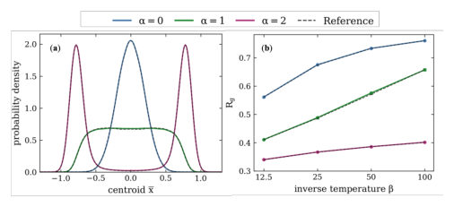
<figcaption class="paper-figure-caption"><b>Fig 1.</b> FIG. 1. Bath and temperature transfer in the Caldeira– Leggett double well. (a) Centroid distribution for bath cou- plings α = 0, 1, 2. Increasing α drives the distribution from unimodal (the particle delocalized over both wells) to bimodal (localized in the wells). (b) Radius of gyration Rg versus in- verse temperature β at fixed τ for the same couplings. Rg increases as the temperature decreases and decreases with coupling. Solid: our method with a single denoiser; dashed: PIMC reference.</figcaption>
</figure>
<figure class="paper-figure-card">

<figcaption class="paper-figure-caption"><b>Fig 2.</b> Figure 1 shows that a single denoiser reproduces the PIMC reference across all three couplings and across tem- perature at fixed τ.</figcaption>
</figure>
<figure class="paper-figure-card">

<figcaption class="paper-figure-caption"><b>Fig 3.</b> FIG. 2. Isotope effects in the Zundel cation. (a) Radius of gyration Rg of the shared nucleus for H, D, and T at 300 K with P = 32. (b) Probability that a substituted isotope oc- cupies a peripheral site rather than the central shared site (highlighted in yellow in the illustration), versus tempera- ture at fixed τ. Heavier isotopes prefer the peripheral sites more strongly, and the preference weakens with temperature. The dotted line marks the isotope-free value 4/5. Solid: our method with a single denoiser. Dashed: PIMD reference.</figcaption>
</figure>
<figure class="paper-figure-card">

<figcaption class="paper-figure-caption"><b>Fig 4.</b> FIG. 3. Isotope effects and open-path observables in liquid water. (a-c) Radial distribution functions of the O–O, O– H, and H–H pairs for H2O, D2O, and T2O at 300 K with P = 32. (d) Intramolecular H–O–H angle distribution for the same isotopes. (e) Normalized radial end-to-end distribution P(∆) of the opened imaginary-time path of a tagged nucleus for the same three liquids. (f) Radial momentum distribution I(p) of the tagged nucleus. Solid: our method with a single denoiser. Dashed: PIMD reference, open-path PIMD in (e) and (f). Dotted: classical MD in (a-d).</figcaption>
</figure>
</div>

<p><strong>Summary.</strong> The paper introduces a novel generative modeling approach to simulate complex quantum systems by treating the path integral measure as a composition of two parts. It demonstrates that training a denoiser on simple classical statistics, when combined with an analytically derived Gaussian term representing the full quantum context, can exactly reproduce the true quantum Boltzmann distribution. This breakthrough allows for highly transferable simulations across varying physical parameters like temperature and mass without retraining.</p>
<p><strong>Why it may be interesting.</strong> This work provides a powerful, unified computational methodology for simulating open quantum systems where NQEs are crucial, linking advanced generative AI techniques (denoising flows) directly to fundamental physics concepts like path integrals and thermal equilibrium.</p>
<details>
<summary>Detailed structure</summary>
<p><strong>Main problem.</strong> The core problem is rigorously capturing Nuclear Quantum Effects (NQEs) within path integral formulations while developing a generative modeling framework that cleanly separates the analytically known quantum context from the learned classical statistics.</p>
<p><strong>Main result.</strong> The authors show that a denoiser trained only on classical Boltzmann statistics can exactly reproduce the full quantum Boltzmann distribution by composing it with an analytic Gaussian component carrying the entire quantum context at sampling time, achieving exact transferability across various physical parameters without retraining.</p>
<p><strong>Method.</strong> They employ generative modeling (denoising/flow matching) applied to path integrals. The method constructs a joint probability distribution where the quantum context is analytically injected into the reverse conditional step of the sampler.</p>
<p><strong>Model / system.</strong> The framework applies to systems exhibiting NQEs, modeled via imaginary-time path integrals mapping the system onto a ring polymer of classical replicas. Benchmarks include the dissipative double well, Zundel cation ($  ext{H}_5    ext{O}^+$), and liquid water.</p>
<p><strong>Key observables.</strong> End-to-end displacement and momentum distributions of tagged nuclei; radial distribution functions (RDFs); centroid distribution ($R_g$).</p>
<p><strong>Important parameters / regimes.</strong> Inverse temperature ($eta$), number of beads ($P$), imaginary time slice width ($ au$), bath coupling strength ($\alpha$), and the training noise level ($\sigma^2$).</p>
<p><strong>Assumptions / limitations.</strong> The composition is exact only if the training noise does not exceed the intrinsic quantum uncertainty, establishing a physical bound; the framework relies on the existence of an amortized denoising posterior.</p>
<p><strong>Figures summary.</strong> Figures demonstrate successful reproduction of PIMC references across varying bath couplings and temperatures in the double well, accurate modeling of isotope effects in the Zundel cation, and matching of open-path observables in liquid water.</p>
<p><strong>Paper structure.</strong> The paper develops a general framework (DPI) for sampling quantum ensembles by separating the path measure. It establishes that training on classical statistics allows composition with an analytic Gaussian component to yield the full quantum distribution, demonstrating this transferability across multiple physical contexts and systems.</p>
</details>
<details>
<summary>Abstract</summary>
<p>Nuclear quantum effects are rigorously captured by imaginary-time path integrals, which map the quantum Boltzmann distribution onto a ring polymer of classical replicas. Yet the nuclear masses, the coupling to the environment, and the boundary conditions of the path remain hard-wired in the simulation or the trained model, even though this quantum context enters the path measure only through a quadratic action known in closed form. Here we show that a denoiser trained on classical Boltzmann statistics alone, composed at sampling time with an analytic Gaussian component carrying the entire quantum context, yields the quantum Boltzmann distribution of the nuclei. Such a composition exists and is exact whenever the training noise does not exceed the intrinsic quantum uncertainty of the target ensemble, and it is invariant across all quantum contexts admitted by this bound. We show exact transfer across temperature, isotopic mass, dissipation strength, and the boundary conditions of the path in theory and in numerical experiments, without retraining. The last yields the end-to-end displacement and momentum distributions of a tagged nucleus from open imaginary-time paths. The same invariance extends in principle to the permuted boundary conditions of bosonic exchange, with the identical denoiser. In this view, the noise of generative modeling and the quantum fluctuations of the nuclei are two faces of the same quadratic structure.</p>
</details>
<p><sub><a href="#top">↑ back to top</a></sub></p>

<p><a id="paper-2607.20279"></a></p>
<h3 id="random-walks-in-dirichlet-random-environment-in-dimension-math402math"><a href="http://arxiv.org/abs/2607.20279v1">Random walks in Dirichlet random environment in dimension $d+1$</a></h3>
<p><strong>Authors:</strong> Guillaume Barraquand, Alexander K. Hartmann, Pierre Le Doussal<br>
<strong>Type:</strong> theory · <strong>Category:</strong> statistical mechanics · <strong>PDF:</strong> <a href="https://arxiv.org/pdf/2607.20279v1">https://arxiv.org/pdf/2607.20279v1</a><br>
<strong>Analysis basis:</strong> full PDF text, analyzed in chunks
<strong>Topic relevance:</strong> <code>non-equilibrium universality</code> <strong>3/5</strong> · <code>non-equilibrium dynamics</code> <strong>2/5</strong> · <code>Keldysh / 2PI / non-Gaussian methods</code> <strong>1/5</strong> · <code>driven-dissipative phase transition</code> <strong>1/5</strong></p>
<div class="figure-strip-hint">↔ Scroll figures horizontally</div>
<div class="paper-figures-scroll">
<figure class="paper-figure-card">

<figcaption class="paper-figure-caption"><b>Fig 1.</b> Figure 2. The numerically estimated variance of the log of the probability in the typical direction for d = 1 (top, u = (1/2, 1/2)), d = 2 (middle, u = (1/3, 1/3, 1/3)) and d = 3 (bottom, u = (1/4, 1/4, 1/4, 1/4) as a function of the time t, for different values of α. The estimates were performed by averaging over 105 (d = 1, d = 2) or 104 (d = 3) samples of the environment, respectively. A fast convergence towards the values given in Eq. (31), as displayed by horizontal lines, is visible.</figcaption>
</figure>
<figure class="paper-figure-card">

<figcaption class="paper-figure-caption"><b>Fig 2.</b> Figure 3. The variance of the log of the probability as function of time t for d = 1 and α = 0.5, measured along several directions u. The solid lines represents the expected asymptotic behaviour t2/3.</figcaption>
</figure>
<figure class="paper-figure-card">

<figcaption class="paper-figure-caption"><b>Fig 3.</b> Figure 4. The variance of the log of the probability as function of time t measured along several directions u, for d = 2 and α = 0.5. The solid ascending lines correspond to t2β with β = 0.24, while the horizontal lines shows Ψ1(α(d + 1)).</figcaption>
</figure>
<figure class="paper-figure-card">

<figcaption class="paper-figure-caption"><b>Fig 4.</b> Figure 5. Main plot: The variance of the log of the prob- ability as function of time t in direction u = (1/2, 1/2, 0). The line indicates the power law t2β with β = 1/3. Left inset: skewness of the distribution again as function of time. The line shows a fit to a power-law plus constant Eq. (38) Right inset: distribution at the largest time tmax = 4096. The line shows a corresponding Gaussian, fitted to the peak region. One sees that all off-peak data points are systematically below of the Gaussian left of the peak, and above the Gaussian right of the peak.</figcaption>
</figure>
<figure class="paper-figure-card">

<figcaption class="paper-figure-caption"><b>Fig 5.</b> Figure 6. Top: The variance of the log of the probability as function of time t measured along certain directions u(k) = (k −3, 1, 1, 1)/k for d = 3. The inset in the right shows results for the exponent δ when fitting the d = 3 data to power laws of the form a + btδ. For small values of k, the exponent is within a one-sigma error bar compatible with 0, while it is not for large k. Bottom: For comparison, we consider the same quantity in dimension d = 1. In that case, the off-diagonal growth in time is well visible, even for relatively small angles.</figcaption>
</figure>
</div>

<p><strong>Summary.</strong> This paper studies random walks in a Dirichlet random environment, aiming to understand how their fluctuations relate to the Kardar-Parisi-Zhang (KPZ) growth universality class beyond $d=1$. Through numerical and analytical methods, it confirms KPZ scaling in lower dimensions, identifies phase transitions in higher dimensions, and derives exact formulas for key statistical quantities like the second moment.</p>
<p><strong>Why it may be interesting.</strong> The deep connection between random walks, disordered media, and non-equilibrium growth phenomena like KPZ is central to modern statistical physics. The explicit treatment of higher dimensions ($d>1$) for this specific Dirichlet model provides crucial benchmarks against continuum theories.</p>
<details>
<summary>Detailed structure</summary>
<p><strong>Main problem.</strong> The paper investigates the atypical behavior of random walks in time-dependent random environments (RWRE), specifically linking its fluctuations to Kardar-Parisi-Zhang (KPZ) growth, particularly in dimensions $d>1$. It also analyzes the asymptotic second moment of point-to-point probabilities.</p>
<p><strong>Main result.</strong> The model confirms KPZ compatibility for variance growth in $d=1$ and $d=2$, identifies a phase transition in $d=3$, and provides an exact calculation for the sample-to-sample variance related to extreme diffusion coefficients.</p>
<p><strong>Method.</strong> The study employs numerical simulations across dimensions ($d=1, 2, 3$) combined with rigorous asymptotic analysis techniques, including second moment calculations and comparisons to continuum scaling limits.</p>
<p><strong>Model / system.</strong> The system is a random walk on $\mathbb{Z}^{d+1}$ whose transition probabilities are governed by a Dirichlet distribution. This model generalizes known integrable models in $d=1$ and exhibits an explicit product-form stationary measure.</p>
<p><strong>Key observables.</strong> Variance of the logarithm of point-to-point probabilities, the annealed drift $\langle X(t) 
angle$, the diffusion matrix $D$, and the second moment $m_2(v)$.</p>
<p><strong>Important parameters / regimes.</strong> Spatial dimension $d$ (tested up to 3), time $t$, and the ratio $|x|/t$ which dictates phase transition behavior.</p>
<p><strong>Assumptions / limitations.</strong> The analysis relies on numerical verification of scaling laws, asymptotic approximations for moments, and relating the system to known KPZ universality classes.</p>
<p><strong>Figures summary.</strong> Figure 1 illustrates the space-time trajectory of the random walk in $d=1+1$ embedded in $\mathbb{Z}^2$.</p>
<p><strong>Paper structure.</strong> The paper progresses from establishing the connection between RWRE and KPZ growth (numerical studies) to analyzing phase transitions ($d=3$), detailing the scaling laws for probability fluctuations ($\log P$), and concluding with an exact calculation of the second moment $m_2(v)$ in the weak disorder regime.</p>
</details>
<details>
<summary>Abstract</summary>
<p>The atypical behaviour of random walks in time-dependent random environment was recently related to Kardar-Parisi-Zhang (KPZ) growth. While this is now well-understood in spatial dimension $d=1$, further efforts are necessary to better understand these connections in dimensions $d>1$. In this paper, we study this problem numerically for $d=1, 2$ and $3$, focusing on a discrete model with Dirichlet distributed transition probabilities. This model is a generalization of an integrable model in $d=1$, and it has the advantage of admitting an explicit, product-form, stationary measure. We verify that the growth of the variance of the logarithm of point-to-point probabilities, namely from the origin to position $x$ in time $t$, is compatible with KPZ growth in dimension $d=1$ and $d=2$. In spatial dimension $d=3$, we confirm the existence of a phase transition as the angle $\vert x\vert /t$ increases and we obtain a lower bound based on an exact second moment calculation. We find that in the weak disorder phase the point-to-point probability acquires a heavy tailed distribution, and that in the strong disorder phase the cumulants of its logarithm grow with time. Further, we show that for this model, we can compute exactly the sample to sample variance of the thermal average $\overline{ \langle x \rangle^2}$ and that it is related to the extreme diffusion coefficient introduced recently.</p>
</details>
<p><sub><a href="#top">↑ back to top</a></sub></p>

<p><a id="paper-2607.19694"></a></p>
<h3 id="twisting-operator-approach-to-identifying-gaplessness-in-sumath435math-fermionic-systems"><a href="http://arxiv.org/abs/2607.19694v1">Twisting-operator approach to identifying gaplessness in SU($N$) fermionic systems</a></h3>
<p><strong>Authors:</strong> Hao Cheng, Hang Su, Yuan Yao<br>
<strong>Type:</strong> theory · <strong>Category:</strong> strongly correlated electrons · <strong>PDF:</strong> <a href="https://arxiv.org/pdf/2607.19694v1">https://arxiv.org/pdf/2607.19694v1</a><br>
<strong>Analysis basis:</strong> full PDF text, analyzed in chunks
<strong>Topic relevance:</strong> <code>analog quantum simulation</code> <strong>3/5</strong> · <code>Keldysh / 2PI / non-Gaussian methods</code> <strong>1/5</strong> · <code>Kondo &amp; dissipative impurity</code> <strong>1/5</strong> · <code>entanglement &amp; information structure</code> <strong>1/5</strong> · <code>non-equilibrium dynamics</code> <strong>1/5</strong></p>
<div class="figure-strip-hint">↔ Scroll figures horizontally</div>
<div class="paper-figures-scroll">
<figure class="paper-figure-card">

<figcaption class="paper-figure-caption"><b>Fig 1.</b> FIG. 1: Results for ⟨ˆU 2⟩in the BCS Hamiltonian. If we set ∆&gt; 0, then 1−⟨ˆU 2⟩∝1/L as shown by the different lines in the figure. For the given L, lim∆→0 ⟨U⟩2 →0 as shown in the vertical series of points in the figure.</figcaption>
</figure>
<figure class="paper-figure-card">

<figcaption class="paper-figure-caption"><b>Fig 2.</b> FIG. 2: Results for ⟨ˆU 2⟩in interaction fermionic models. (a) For the half-filled Hubbard chain, corresponding to the extended Hubbard model with V = 0, ⟨ˆU 2⟩remains close to zero for L = 32, . . . , 128. (b) For the half-filled two-leg Hubbard ladder with U = 4, t∥= 0.4, and t⊥= 1, ⟨ˆU 2⟩flows toward unity. The solid line is a linear fit in 1/Lx, with the intercept 0.999(3).</figcaption>
</figure>
</div>

<p><strong>Summary.</strong> The authors introduce the twisting-operator approach as a general criterion to determine if an SU(N)-symmetric fermionic system is gapped or gapless. By analyzing the expectation value of this operator, they derive rigorous conditions that distinguish between these two fundamentally different quantum phases in models like the Hubbard chain.</p>
<p><strong>Why it may be interesting.</strong> This provides a powerful, symmetry-based diagnostic tool for characterizing quantum phases (gapped vs. gapless) in strongly correlated electron systems, which is fundamental to understanding materials physics.</p>
<details>
<summary>Detailed structure</summary>
<p><strong>Main problem.</strong> The paper develops a general necessary condition, based on a fermionic twisting operator, to rigorously distinguish between gapped and gapless phases in fermionic systems possessing SU(N) spin-rotation symmetry.</p>
<p><strong>Main result.</strong> A non-unity expectation value of the twisting operator $\langle \hat{U}^M 
angle$ in the thermodynamic limit provides a sufficient criterion for identifying a gapless fermion chain, while unity suggests a gapped phase.</p>
<p><strong>Method.</strong> The core method involves analyzing the asymptotic behavior of the expectation value of a specially constructed fermionic twisting operator ($\hat{U}$) applied to the ground state, relating it to the system's spectral gap.</p>
<p><strong>Model / system.</strong> The study focuses on spinful fermion chains generalized to SU(N)-symmetric systems. Examples include the BCS Hamiltonian and interacting Hubbard models, which are used to test the criterion.</p>
<p><strong>Key observables.</strong> The expectation value $\langle \hat{U}^M 
angle$, where $M$ is related to the symmetry group structure; deviations from $1 + O(1/L)$ signal gaplessness.</p>
<p><strong>Important parameters / regimes.</strong> System size ($L$), BCS pairing gap ($\Delta$), and the symmetry rank ($N$).</p>
<p><strong>Assumptions / limitations.</strong> The analysis assumes that for gapped systems, the ground state must form a trivial representation of SU(N), and relies on asymptotic expansions in $1/L$.</p>
<p><strong>Figures summary.</strong> Figures illustrate the behavior of $\langle \hat{U}^2 
angle$ for both BCS (gapped vs. gapless) and DQMC simulations (Hubbard chain vs. ladder), showing the expected approach to 1 or 0.</p>
<p><strong>Paper structure.</strong> The paper establishes theorems relating gapped/gapless nature to the twisting operator expectation value, proves necessary lemmas connecting different correlation functions, and then applies these tools to specific models like BCS and Hubbard chains.</p>
</details>
<details>
<summary>Abstract</summary>
<p>We propose a general necessary condition for a spinful fermion chain with SU(2) spin-rotation symmetry to be gapped. Specifically, we prove that the expectation value of a properly defined fermionic twisting operator asymptotically approaches unity in any gapped phase with finite ground-state degeneracy, with finite-size corrections bounded by $\mathscr{O}(1/L)$. Consequently, a non-unity value in the thermodynamic limit provides a sufficient criterion for identifying gapless fermion chains. We confirm this criterion using the $s$-wave Bardeen-Cooper-Schrieffer (BCS) Hamiltonian and determinant quantum Monte Carlo (DQMC) simulations of interacting Hubbard models. We further extend the twisting-operator approach to SU($N$)-symmetric fermionic systems, where the gapped ground-state sector must be SU($N$)-singlet and $\langle \hat{\mathcal{U}}^M\rangle=1+\mathscr{O}(1/L)$ by a fermionic twisting operator $\hat{\mathcal{U}}$ with a suitably chosen integer $M$.</p>
</details>
<p><sub><a href="#top">↑ back to top</a></sub></p>

<p><a id="paper-2607.20134"></a></p>
<h3 id="derivation-of-the-boltzmann-equation-with-no-molecular-chaos-type-approximation"><a href="http://arxiv.org/abs/2607.20134v1">Derivation of the Boltzmann equation with no "molecular chaos"-type approximation</a></h3>
<p><strong>Authors:</strong> Victor F. Los<br>
<strong>Type:</strong> theory · <strong>Category:</strong> statistical mechanics · <strong>PDF:</strong> <a href="https://arxiv.org/pdf/2607.20134v1">https://arxiv.org/pdf/2607.20134v1</a><br>
<strong>Analysis basis:</strong> full PDF text, analyzed in chunks
<strong>Topic relevance:</strong> <code>Keldysh / 2PI / non-Gaussian methods</code> <strong>3/5</strong> · <code>non-equilibrium dynamics</code> <strong>2/5</strong> · <code>methods for driven-dissipative</code> <strong>1/5</strong></p>
<div class="figure-strip-hint">↔ Scroll figures horizontally</div>
<div class="paper-figures-scroll">
<figure class="paper-figure-card">

<figcaption class="paper-figure-caption"><b>Fig 1.</b> Low-resolution page preview, page 2</figcaption>
</figure>
<figure class="paper-figure-card">

<figcaption class="paper-figure-caption"><b>Fig 2.</b> Low-resolution page preview, page 3</figcaption>
</figure>
<figure class="paper-figure-card">

<figcaption class="paper-figure-caption"><b>Fig 3.</b> Low-resolution page preview, page 4</figcaption>
</figure>
<figure class="paper-figure-card">

<figcaption class="paper-figure-caption"><b>Fig 4.</b> Low-resolution page preview, page 5</figcaption>
</figure>
<figure class="paper-figure-card">

<figcaption class="paper-figure-caption"><b>Fig 5.</b> Low-resolution page preview, page 6</figcaption>
</figure>
</div>

<p><strong>Summary.</strong> This paper presents a sophisticated derivation of kinetic evolution equations, such as the Boltzmann equation, directly from the full Liouville dynamics of interacting particles. By employing a specialized projection operator formalism, it overcomes the limitations of previous methods that required assuming molecular chaos or ignoring initial correlations. The result confirms the validity of the Boltzmann description in appropriate time limits while maintaining mathematical rigor regarding initial state preparation.</p>
<p><strong>Why it may be interesting.</strong> This work provides a rigorous theoretical framework for deriving kinetic equations like the Boltzmann equation from first principles (Liouville dynamics) while correctly handling non-equilibrium initial conditions and avoiding common approximations used in statistical mechanics.</p>
<details>
<summary>Detailed structure</summary>
<p><strong>Main problem.</strong> The paper addresses the fundamental challenge of deriving a closed evolution equation for reduced $s$-particle distribution functions from the full Liouville equation without invoking the 'molecular chaos' approximation.</p>
<p><strong>Main result.</strong> It rigorously derives that in the long-time limit ($t \gg t_{	ext{cor}}$), the system approaches the linear Boltzmann equation, and in an intermediate regime, it matches the nonlinear Boltzmann equation, all while correctly accounting for initial correlations.</p>
<p><strong>Method.</strong> The derivation employs a specialized projection operator formalism applied to the Nakajima-Zwanzig Generalized Master Equation (GME) to transform the inhomogeneous GME into an exact, homogeneous form.</p>
<p><strong>Model / system.</strong> The system consists of $N$ interacting classical particles governed by the Liouville equation. The analysis focuses on deriving equations for reduced density functions ($F_s$) describing subsystems of $s$ particles coupled to a large environment ($\Sigma$).</p>
<p><strong>Key observables.</strong> Reduced distribution functions $F_s(t)$, particularly $F_1(t)$ and $F_2(t)$; the collision integral $J$.</p>
<p><strong>Important parameters / regimes.</strong> Time scales: correlation time ($t_{	ext{cor}}$), relaxation time ($t_{	ext{rel}}$); Density parameter ($\gamma$); Mean free path ($l$).</p>
<p><strong>Assumptions / limitations.</strong> The derivation relies on a small density approximation ($\gamma \ll 1$) and the assumption that initial correlations can be systematically incorporated into the evolution kernel.</p>
<p><strong>Paper structure.</strong> The paper progresses by first establishing the need for an exact, closed GME using projection operators. It then derives the time-convolution form of the equation, showing how initial correlation terms are managed. Finally, it analyzes the long-time limit to recover the standard Boltzmann equation forms.</p>
</details>
<details>
<summary>Abstract</summary>
<p>The paper resolves the problem of the derivation of a completely closed evolution equation for $s$-particle distribution function $F_s(t)$ ($s \le N$) from the Liouville equation for $N \gg 1$-particle distribution function $F_N(t)$ with arbitrary initial condition $F_N(0)$ and without any use of the "molecular chaos" type approximation. The initial correlations are accounted for in this equation in the kernel governing the evolution of $F_s(t)$ via the special projection operator which exactly transforms the inhomogeneous Nakajima-Zwanzig Generalized Master Equation (GME) with an irrelevant initial condition term into the homogenous one. This equation is further simplified by presenting its kernel in the linear in the particles' density $n$ approximation. In this approximation the equations for one-particle $F_1(t)$ and two-particle $F_2(t)$ distribution functions are derived. It is shown that the terms describing the influence of initial correlations in the equation for $F_1(t)$ disappear at the large timescale $t \sim t_{\text{rel}} \gg t_{\text{cor}}$ ($t_{\text{cor}}$ is a short correlation time as compared to a relaxation time $t_{\text{rel}}$ of $F_1(t)$) resulting in the linear Boltzmann equation. This equation can be presented as the nonlinear Boltzmann equation in the time interval $t_{\text{cor}} \ll t \ll t_{\text{rel}}$. At $t_{\text{rel}} \to \infty$ (mean free path $l \to \infty$) the Boltzmann equation holds for all finite times $t \gg t_{\text{cor}}$.</p>
</details>
<p><sub><a href="#top">↑ back to top</a></sub></p>

<p><a id="paper-2607.20243"></a></p>
<h3 id="dynamical-criticality-of-a-machine-learning-assisted-monte-carlo-algorithm-for-a-mean-field-spin-glass-model"><a href="http://arxiv.org/abs/2607.20243v1">Dynamical Criticality of a Machine-learning-assisted Monte Carlo algorithm for a Mean-Field Spin Glass model</a></h3>
<p><strong>Authors:</strong> Seiya Miyamoto, Masayuki Ohzeki, Yoshihiko Nishikawa<br>
<strong>Type:</strong> theory · <strong>Category:</strong> disordered systems and neural networks · <strong>PDF:</strong> <a href="https://arxiv.org/pdf/2607.20243v1">https://arxiv.org/pdf/2607.20243v1</a><br>
<strong>Analysis basis:</strong> full PDF text, analyzed in chunks
<strong>Topic relevance:</strong> <code>methods for driven-dissipative</code> <strong>3/5</strong> · <code>exotic spin models in light-matter</code> <strong>1/5</strong> · <code>non-equilibrium dynamics</code> <strong>1/5</strong></p>
<div class="figure-strip-hint">↔ Scroll figures horizontally</div>
<div class="paper-figures-scroll">
<figure class="paper-figure-card">

<figcaption class="paper-figure-caption"><b>Fig 1.</b> Figure 1: Example of MADE network architecture with the autoregressive property, with input x, one hidden layer h, and output ˆx.</figcaption>
</figure>
<figure class="paper-figure-card">

<figcaption class="paper-figure-caption"><b>Fig 2.</b> Figure 2: Overlap distribution P(q) at temperatures (a) T/J = 2 and (b) T/J = 1. The curves are shown from bottom to top for N = 32,64,128,256,512, and 1024.</figcaption>
</figure>
<figure class="paper-figure-card">

<figcaption class="paper-figure-caption"><b>Fig 3.</b> Figure 3: Scaled spin glass susceptibility χSG/N 1/3. The curves for different system sizes intersect at T/J ≈1.13.</figcaption>
</figure>
<figure class="paper-figure-card">

<figcaption class="paper-figure-caption"><b>Fig 4.</b> Figure 4: Autocorrelation function c(t) for N = 128 at T = 1 and at D = 211,212,...,219. At D ≳215, c(t) decays rapidly with an exponential form, whereas, at D ≲213, it has a clear power-law decay c(t) ∼t−δ on a long timescale. The exponent δ ≈0.4 at D = 211.</figcaption>
</figure>
<figure class="paper-figure-card">

<figcaption class="paper-figure-caption"><b>Fig 5.</b> Figure 5: Relaxation time τ (solid lines) and mean time scale determined by the acceptance ratio ˜τexp(D) (dashed lines) as functions of training data size D.</figcaption>
</figure>
</div>

<p><strong>Summary.</strong> The paper investigates using Machine Learning, specifically autoregressive neural networks, to accelerate Monte Carlo simulations of spin glass models. While the ML-assisted method successfully reduces simulation relaxation times, the authors find that the exponential growth in required training data eventually outweighs the computational gains, posing a major hurdle for large-scale applications.</p>
<p><strong>Why it may be interesting.</strong> This work directly bridges advanced machine learning techniques (generative models) with fundamental problems in condensed matter physics (spin glasses), offering a potential computational tool for studying complex energy landscapes that are otherwise intractable.</p>
<details>
<summary>Detailed structure</summary>
<p><strong>Main problem.</strong> The paper assesses how Machine-learning-assisted Monte Carlo (MLMC) algorithms can efficiently simulate complex, low-temperature dynamics in spin glass models where traditional MCMC methods become prohibitively slow.</p>
<p><strong>Main result.</strong> While the MLMC approach significantly reduces relaxation times compared to local MC, the required training dataset size grows much faster than the achievable time reduction, limiting its practical scalability for large systems.</p>
<p><strong>Method.</strong> The authors employ an autoregressive generative neural network (MADE) trained on equilibrium configurations to generate statistically independent samples, which are then used within a modified Monte Carlo simulation framework (MADEMC).</p>
<p><strong>Model / system.</strong> The study focuses on the antiferromagnetic Ising model defined on a random regular graph, exhibiting spin-glass behavior characterized by Replica Symmetry Breaking. The Hamiltonian is $H_J(\sigma) = \sum_{i<j} J_{ij}\sigma_i\sigma_j - h \sum_i \sigma_i$.</p>
<p><strong>Key observables.</strong> Relaxation time, dynamical exponent, overlap distribution ($P(q)$), and spin glass susceptibility ($\chi_{SG}$).</p>
<p><strong>Important parameters / regimes.</strong> Temperature ratios ($T/J$), system size ($N$), and the size of the training dataset.</p>
<p><strong>Assumptions / limitations.</strong> The MLMC performance relies on MADE being expressive enough to approximate the true Boltzmann distribution, and the analysis assumes an 'ideal' dataset generation process.</p>
<p><strong>Figures summary.</strong> Figure 3 is mentioned in relation to $\chi_{SG}/N^{1/3}$ scaling, indicating a critical temperature $T_c/J \approx 1.13$ for the spin-glass transition at $T/J=1$.</p>
<p><strong>Paper structure.</strong> The paper first establishes the need for MLMC due to slow MCMC dynamics in glassy systems. It details the use of MADE trained on equilibrium data (via parallel tempering) to accelerate sampling, analyzes the resulting scaling laws, and concludes by discussing the practical limitations imposed by training cost.</p>
</details>
<details>
<summary>Abstract</summary>
<p>We critically assess the performance of an autoregressive generative neural network model by applying it to an antiferromagnetic Ising model on a random regular graph. We train the network on equilibrium configurations in the low-temperature spin-glass phase of the model and perform Monte Carlo simulations using spin configurations generated by the network. The relaxation time of the Monte Carlo simulations drastically decreases with increasing the size of the training dataset and converges to an optimal value. The dynamical exponent characterizing the growth of the optimal relaxation time as a function of the system size is slightly reduced compared to the local Monte Carlo dynamics. However, we find that the size of the training dataset to achieve the optimal performance grows much faster with the system size than the relaxation time, implying that the total training cost eventually hinders a practical use of the method at large system sizes.</p>
</details>
<p><sub><a href="#top">↑ back to top</a></sub></p>

<p><a id="paper-2607.19852"></a></p>
<h3 id="optimal-lower-bounds-for-hamiltonian-simulation"><a href="http://arxiv.org/abs/2607.19852v1">Optimal Lower Bounds for Hamiltonian Simulation</a></h3>
<p><strong>Authors:</strong> Alexander Zlokapa, Richard R. Allen, Aram W. Harrow<br>
<strong>Type:</strong> theory · <strong>Category:</strong> quantum information and computing · <strong>PDF:</strong> <a href="https://arxiv.org/pdf/2607.19852v1">https://arxiv.org/pdf/2607.19852v1</a><br>
<strong>Analysis basis:</strong> full PDF text, analyzed in chunks
<strong>Topic relevance:</strong> <code>analog quantum simulation</code> <strong>3/5</strong> · <code>entanglement &amp; information structure</code> <strong>1/5</strong> · <code>non-equilibrium dynamics</code> <strong>1/5</strong></p>
<div class="figure-strip-hint">↔ Scroll figures horizontally</div>
<div class="paper-figures-scroll">
<figure class="paper-figure-card">

<figcaption class="paper-figure-caption"><b>Fig 1.</b> Low-resolution page preview, page 2</figcaption>
</figure>
<figure class="paper-figure-card">

<figcaption class="paper-figure-caption"><b>Fig 2.</b> Low-resolution page preview, page 3</figcaption>
</figure>
<figure class="paper-figure-card">

<figcaption class="paper-figure-caption"><b>Fig 3.</b> Low-resolution page preview, page 4</figcaption>
</figure>
<figure class="paper-figure-card">

<figcaption class="paper-figure-caption"><b>Fig 4.</b> Low-resolution page preview, page 5</figcaption>
</figure>
<figure class="paper-figure-card">

<figcaption class="paper-figure-caption"><b>Fig 5.</b> Low-resolution page preview, page 6</figcaption>
</figure>
</div>

<p><strong>Summary.</strong> This paper derives rigorous, asymptotically tight lower bounds for simulating time evolution under a general Hamiltonian. By analyzing the required gate count and query complexity separately, it shows that these bounds are achievable by advanced simulation techniques like composite qDRIFT. The results clarify the scaling of quantum resources needed for physical simulations, particularly distinguishing between resource requirements based on circuit depth versus oracle access.</p>
<p><strong>Why it may be interesting.</strong> This work provides fundamental theoretical limits on how efficiently quantum computers can simulate physical Hamiltonians, directly impacting resource estimation for chemistry and condensed matter simulations.</p>
<details>
<summary>Detailed structure</summary>
<p><strong>Main problem.</strong> The primary goal is establishing asymptotically tight lower bounds on the gate and query complexities required to simulate quantum time evolution governed by a general Hamiltonian.</p>
<p><strong>Main result.</strong> The authors prove that for specific local Hamiltonians, the optimal simulation complexity scales polynomially in $1/\epsilon$ (error) rather than being dictated solely by counting coherent oracle queries.</p>
<p><strong>Method.</strong> The proof employs sophisticated techniques involving analyzing total variation distance and fidelity loss between the ideal time evolution and the approximated channel output. These bounds are derived separately for gate and query models using tailored lemmas for 'head' and 'tail' components of the Hamiltonian.</p>
<p><strong>Model / system.</strong> The analysis focuses on simulating $e^{-iHt}$ where $H = \sum_{j=1}^{L} a_j h_j$, with $h_j$ being local, bounded-degree operators. The complexity is analyzed in both gate and classical oracle query models.</p>
<p><strong>Key observables.</strong> Gate complexity ($G$), Query complexity ($Q$), Trace-distance error ($\epsilon$), and the simulation time ($t$).</p>
<p><strong>Important parameters / regimes.</strong> The coefficients $a_j$, the number of terms $L$, and the locality/degree of the Hamiltonian are crucial parameters.</p>
<p><strong>Assumptions / limitations.</strong> The lower bounds hold for local, bounded-degree Hamiltonians and assume that the simulation must approximate the evolution to a specified trace-distance error $\epsilon$.</p>
<p><strong>Paper structure.</strong> The paper develops two main lines of argument: one establishing gate complexity lower bounds (Theorem 1) by analyzing correlation ratios, and another establishing query complexity lower bounds (Theorem 2) by bounding the total variation distance between expected outcomes.</p>
</details>
<details>
<summary>Abstract</summary>
<p>For Hamiltonian $H = \sum_j h_j$, we prove asymptotically tight lower bounds on the gate and query complexities of simulating time evolution on a quantum computer. Our bounds hold for arbitrary term norms $\|h_j\|$, time $t$, and trace-distance error $ε$. The matching upper bound (known as composite qDRIFT) consists of high-order Trotterization of the large terms and a randomized first-order Trotterization of the small terms. Unlike prior work that chooses worst-case $\|h_j\|$ to encode the computation of parity or other Boolean functions in time evolution, our proof is elementary and based on a local, bounded-degree classical Hamiltonian. Our work suggests that for many physical systems (e.g., power-law interactions), gate count must scale polynomially in $1/ε$, contrary to the complexity suggested by counting coherent oracle queries such as those in the block-encoding model.</p>
</details>
<p><sub><a href="#top">↑ back to top</a></sub></p>

<p><a id="paper-2607.20261"></a></p>
<h3 id="coherence-driven-origin-of-metamagnetism-in-anisotropic-heavy-fermion-systems"><a href="http://arxiv.org/abs/2607.20261v1">Coherence-driven origin of metamagnetism in anisotropic heavy-fermion systems</a></h3>
<p><strong>Authors:</strong> Ewan Scott, Zheyu Wu, Theodore I. Weinberger, Alexander G. Eaton, Michal P. Kwasigroch<br>
<strong>Type:</strong> theory · <strong>Category:</strong> strongly correlated electrons · <strong>PDF:</strong> <a href="https://arxiv.org/pdf/2607.20261v1">https://arxiv.org/pdf/2607.20261v1</a><br>
<strong>Analysis basis:</strong> full PDF text, analyzed in chunks
<strong>Topic relevance:</strong> <code>Kondo &amp; dissipative impurity</code> <strong>3/5</strong> · <code>Keldysh / 2PI / non-Gaussian methods</code> <strong>1/5</strong></p>
<div class="figure-strip-hint">↔ Scroll figures horizontally</div>
<div class="paper-figures-scroll">
<figure class="paper-figure-card">

<figcaption class="paper-figure-caption"><b>Fig 1.</b> FIG. 1. (a) The mixed susceptibility, χcf, gives the magnetization of the conduction electrons when a field is applied only to the hybridizing f1-moments on the uranium ions. (b) The temperature evolution of the anomalous part of the inverse susceptibility χ−1 anom = χ−1 −χ−1 CW at ambient pressure. The departure from the linear Curie-Weiss law χ−1 CW is most clearly seen when the difference ∆χ−1 anom between two directions is taken. The legend gives the directions for which the difference is taken, ba means 1/χb anom −1/χa anom, etc. χcf(T, h = 0) ∝(1 −T/T ∗ coh) ln(T ∗ coh/T) gives the empirically expected behavior for the mixed susceptibility with T ∗ coh fitted to 122 K. ∆χ−1 anom was...</figcaption>
</figure>
<figure class="paper-figure-card">

<figcaption class="paper-figure-caption"><b>Fig 2.</b> FIG. 2. The temperature evolution of the anomalous part of the susceptibility χ−1 anom = χ−1 −χ−1 CW for pressure in the range 0 −1.1 GPa. The anomalous evolution is most evident if the difference between two directions is taken. The difference between a and b directions ∆χ−1 anom = 1/χb anom −1/χa anom is taken (similar behaviour observed for other directions). (a) ∆χ−1 anom is plotted as a function of temperature. The inset shows the difference in the inverse susceptibility along the b and a axes 1/χb −1/χa before the subtraction of the high-temperature Curie-Weiss fit. (b) An appropriate coherence temperature T ∗ coh(p) was chosen for each pressure to collapse the experimental data onto...</figcaption>
</figure>
<figure class="paper-figure-card">

<figcaption class="paper-figure-caption"><b>Fig 3.</b> FIG. 3. (a) Mixed susceptibility χcf(T, hc), as a function of temperature T and field hc applied only to conduction electrons. The mixed susceptibility gives the susceptibility of the hybridized f1-moment when the field is only applied to conduction electrons. The calculation is performed in the large-N limit of the Kondo model with a constant density of states ρ for the conduction band, and for a representative conduction electron filling nc = 0.8 and Kondo coupling 2J1ρ = 1. The coherence temperature T ∗ coh has been estimated as the temperature at which the hybridization field turns on. (b) The zero-field mixed susceptibility χcf(T, hc = 0), as a function of temperature T. (c) The...</figcaption>
</figure>
<figure class="paper-figure-card">

<figcaption class="paper-figure-caption"><b>Fig 4.</b> FIG. 4. (a) The theoretically calculated zero-field susceptibility χ(T, h = 0) as a function of temperature for field applied at an angle θbc from the b-axis towards the c-axis in the range 0◦to 60◦. The mean-field approximation in Eq. 5 was used with the following representative parameters: Kondo couplings 2J1ρ = 1, 2J2ρ = 0.99, molecular field λρ = −0.25, conduction electron filling nc = 0.9. The anisotropy parameters of Dbρ = −0.85, Dcρ = 0.19 were tuned to obtain the best possible fit for the susceptibility maximum temperature Tmax(θbc). (b) The experimentally obtained susceptibility for the same range of angles θbc. (c) The theoretically calculated zero-temperature magnetization of the...</figcaption>
</figure>
</div>

<p><strong>Summary.</strong> This work presents a comprehensive analytic theory for magnetic anisotropy in heavy-fermion metamagnets. By introducing the mixed susceptibility $\chi_{cf}$, the authors successfully unify the understanding of field-induced metamagnetism and anomalous temperature dependencies across multiple thermodynamic variables. This framework establishes a general, microscopic model applicable to a broad class of correlated materials.</p>
<p><strong>Why it may be interesting.</strong> The explicit derivation of a single thermodynamic observable ($\chi_{cf}$) that governs multiple complex phenomena (metamagnetism, susceptibility anomalies) provides a powerful, unified theoretical tool applicable to strongly correlated electron physics.</p>
<details>
<summary>Detailed structure</summary>
<p><strong>Main problem.</strong> The microscopic origin of pronounced magnetic anisotropy underlying metamagnetism and an anomalous maximum in hard-axis susceptibility in heavy-fermion materials remains unresolved.</p>
<p><strong>Main result.</strong> The authors develop a general, coherence-driven framework using the mixed susceptibility $\chi_{cf}(T, h, p)$ that successfully unifies the anisotropic response across temperature, field, and pressure for these systems.</p>
<p><strong>Method.</strong> Development of an analytic $c$-$f$ theory based on extending the 2-fluid model to explicitly treat magnetic anisotropy arising from localized-itinerant electron interactions.</p>
<p><strong>Model / system.</strong> The study focuses on heavy-fermion compounds, particularly $    ext{UTe}_2$, modeling the system with two types of $f$-electrons: an itinerant ($f_1$) and a localized ($f_2$). The theory incorporates Kondo coupling and anisotropy interactions between these moments.</p>
<p><strong>Key observables.</strong> Mixed susceptibility ($\chi_{cf}(T, h, p)$), critical magnetic field for metamagnetism ($h_m$), and the temperature of the susceptibility maximum ($T_{\max}$).</p>
<p><strong>Important parameters / regimes.</strong> Temperature ($T$), Magnetic Field ($h$), Pressure ($p$), Kondo coupling constants ($J_1, J_2$), and anisotropy parameters ($D_\eta$).</p>
<p><strong>Assumptions / limitations.</strong> The theory builds upon the 2-fluid model (Nakatsuji, Pines, Fisk) and utilizes mean-field approximations in the large-$N$ limit.</p>
<p><strong>Figures summary.</strong> Figures illustrate how $\chi_{cf}$ unifies anisotropic response across T, h, p; they also show theoretical predictions for $h_m(	heta_{bc})$ and $T_{\max}(	heta_{bc})$ compared to experimental data.</p>
<p><strong>Paper structure.</strong> The paper first identifies the unresolved puzzle of anisotropy in heavy-fermion metamagnets. It then develops the analytic $c$-$f$ theory centered on $\chi_{cf}$. Finally, it tests this theory against detailed measurements from $  ext{UTe}_2$, demonstrating its predictive power for both the susceptibility maximum and the metamagnetic transition.</p>
</details>
<details>
<summary>Abstract</summary>
<p>A number of heavy-fermion materials exhibit magnetic field-induced metamagnetism: on applying a field along the magnetic hard axis, the magnetization first rises gradually, then jumps abruptly once a critical field is reached. Despite decades of phenomenological modeling, the microscopic origin of the pronounced magnetic anisotropy underlying this behavior has remained unresolved. The same is true of a related, long-standing puzzle: an anomalous maximum in the hard-axis susceptibility versus temperature. Both are complicated in $5f$ compounds by the dual localized-itinerant character of the relevant electrons. Here we develop an analytic $c$--$f$ theory of magnetic anisotropy in heavy-fermion metamagnets, identifying the mixed susceptibility $χ_{\rm cf}(T,h,p)$ as a single thermodynamic observable that unifies the anisotropic response across temperature, field, and pressure. We test this theory against primary and literature data for the heavy-fermion superconductor UTe$_2$, finding excellent quantitative agreement in the temperature, field, and pressure evolution of its magnetic anisotropy -- including a Kondo-coherence origin for the anomalous hard-axis susceptibility maximum, which we show is directly connected to the metamagnetic transition itself. Our results establish a general, microscopic, coherence-driven framework for anisotropic metamagnetism, applicable across the broad class of heavy-fermion compounds that display this phenomenology.</p>
</details>
<p><sub><a href="#top">↑ back to top</a></sub></p>

<p><a id="paper-2607.20075"></a></p>
<h3 id="two-and-three-body-bound-states-in-one-dimensional-fermi-bipolaron-with-three-body-interaction"><a href="http://arxiv.org/abs/2607.20075v1">Two- and three-body bound states in one-dimensional Fermi bipolaron with three-body interaction</a></h3>
<p><strong>Authors:</strong> O. Hryhorchak, V. Pastukhov<br>
<strong>Type:</strong> theory · <strong>Category:</strong> quantum gases · <strong>PDF:</strong> <a href="https://arxiv.org/pdf/2607.20075v1">https://arxiv.org/pdf/2607.20075v1</a><br>
<strong>Analysis basis:</strong> full PDF text, analyzed in chunks
<strong>Topic relevance:</strong> <code>analog quantum simulation</code> <strong>3/5</strong> · <code>Keldysh / 2PI / non-Gaussian methods</code> <strong>1/5</strong></p>
<div class="figure-strip-hint">↔ Scroll figures horizontally</div>
<div class="paper-figures-scroll">
<figure class="paper-figure-card">

<figcaption class="paper-figure-caption"><b>Fig 1.</b> FIG. 1: Energies of trimer (solid line) and dimer (dashed line) in the one-particle-hole approximation for different mass ratios m/mI. The thing line represents the result of the T- matrix approximation for the trimer.</figcaption>
</figure>
<figure class="paper-figure-card">

<figcaption class="paper-figure-caption"><b>Fig 2.</b> FIG. 2: Identified branches of trimers for several mass ratios of impurities and medium fermions. The vacuum-like ϵtrimer,0 (solid line) is the lowest one that survives even in the three- body limit. Two others disappear at sufficiently low densities of host fermions.</figcaption>
</figure>
</div>

<p><strong>Summary.</strong> This theoretical paper analyzes the formation of bound states—specifically dimers and trimers—when two impurities are placed in a 1D Fermi gas interacting via a three-body contact potential. Using variational methods, the authors predict that multiple stable few-body complexes emerge across various coupling strengths, demonstrating rich medium-induced physics.</p>
<p><strong>Why it may be interesting.</strong> This work explores how non-standard interactions (three-body) can induce complex few-body correlations in low-dimensional quantum gases, providing insights into emergent many-body physics beyond simple two-body scattering.</p>
<details>
<summary>Detailed structure</summary>
<p><strong>Main problem.</strong> The study investigates the ground-state properties of two impurities immersed in a one-dimensional ideal Fermi gas, specifically focusing on medium-induced few-body bound states.</p>
<p><strong>Main result.</strong> Variational calculations predict the emergence of both dimer and several trimer bound states over a wide range of the three-body coupling parameter. The dimer state is generally found to be energetically preferable.</p>
<p><strong>Method.</strong> The analysis employs variational calculations using trial wave functions that incorporate up to one particle-hole excitation, solving resulting coupled integral equations.</p>
<p><strong>Model / system.</strong> The system models two bosonic (or spin-1/2 fermionic) impurities interacting via a three-body contact interaction within a 1D ideal Fermi gas host. The physics is captured by an effective Hamiltonian describing the center-of-mass motion of the impurities.</p>
<p><strong>Key observables.</strong> Energies of the bound states ($\epsilon_{	ext{dimer}}$ and $\epsilon_{	ext{trimer}}$), which are compared against T-matrix results.</p>
<p><strong>Important parameters / regimes.</strong> The three-body coupling constant ($g_{3,\Lambda}$), the Fermi energy ($\epsilon_F$), and the mass ratio of impurities to host fermions ($m/m_I$).</p>
<p><strong>Assumptions / limitations.</strong> The model assumes only a zero-range, three-body interaction is present. The variational ansatz includes up to one particle-hole excitation.</p>
<p><strong>Figures summary.</strong> Figure 1 compares calculated dimer and trimer energies across various mass ratios and coupling parameters against T-matrix results. Figure 2 identifies multiple branches of trimer states ($\epsilon_{	ext{trimer}, n}$) relative to the vacuum branch.</p>
<p><strong>Paper structure.</strong> The paper derives an effective Hamiltonian for the impurities interacting with the host, then applies variational methods to determine the ground state energies for both dimer and trimer configurations by solving coupled integral equations.</p>
</details>
<details>
<summary>Abstract</summary>
<p>We discuss the ground-state properties of two bosonic (or spin-1/2 fermionic in a singlet spin state) impurities immersed in a one-dimensional ideal Fermi gas with only the three-body contact interaction accounted for. Despite its simplicity, the considered model is found to demonstrate a variety of medium-induced few-body bound states. Particularly, using variational calculations with trial wave functions that correctly take into account one particle-hole excitation, we predict the emergence of a dimer state and several trimer states over a wide range of the three-body coupling parameter.</p>
</details>
<p><sub><a href="#top">↑ back to top</a></sub></p>

<p><a id="paper-2607.20266"></a></p>
<h3 id="identifying-local-unitary-equivalence-based-on-reduction-of-quantum-states"><a href="http://arxiv.org/abs/2607.20266v1">Identifying local unitary equivalence based on reduction of quantum states</a></h3>
<p><strong>Authors:</strong> Yanjun Chu, Chenyang Cui, Yuhang Xie, Mengli Liu, Shao-Ming Fei<br>
<strong>Type:</strong> theory · <strong>Category:</strong> quantum information and computing · <strong>PDF:</strong> <a href="https://arxiv.org/pdf/2607.20266v1">https://arxiv.org/pdf/2607.20266v1</a><br>
<strong>Analysis basis:</strong> full PDF text, analyzed in chunks
<strong>Topic relevance:</strong> <code>entanglement &amp; information structure</code> <strong>3/5</strong></p>
<div class="figure-strip-hint">↔ Scroll figures horizontally</div>
<div class="paper-figures-scroll">
<figure class="paper-figure-card">

<figcaption class="paper-figure-caption"><b>Fig 1.</b> Low-resolution page preview, page 2</figcaption>
</figure>
<figure class="paper-figure-card">

<figcaption class="paper-figure-caption"><b>Fig 2.</b> Low-resolution page preview, page 3</figcaption>
</figure>
<figure class="paper-figure-card">

<figcaption class="paper-figure-caption"><b>Fig 3.</b> Low-resolution page preview, page 4</figcaption>
</figure>
<figure class="paper-figure-card">

<figcaption class="paper-figure-caption"><b>Fig 4.</b> Low-resolution page preview, page 5</figcaption>
</figure>
<figure class="paper-figure-card">

<figcaption class="paper-figure-caption"><b>Fig 5.</b> Low-resolution page preview, page 6</figcaption>
</figure>
</div>

<p><strong>Summary.</strong> This paper tackles the difficult problem of determining local unitary equivalence for structured quantum states. The authors propose a novel 'reduction' procedure that simplifies these complex states by focusing on their reduced counterparts derived from nullifying the highest-multiplicity eigenvalue. This technique successfully establishes a criterion to classify entanglement resources in these degenerate systems.</p>
<p><strong>Why it may be interesting.</strong> This work provides a powerful theoretical toolkit for simplifying the analysis of highly complex, degenerate quantum states in resource theories, making previously intractable problems tractable via reduction.</p>
<details>
<summary>Detailed structure</summary>
<p><strong>Main problem.</strong> The core challenge addressed is identifying local unitary (LU) equivalence for quantum states, a problem crucial for quantifying and classifying entanglement resources.</p>
<p><strong>Main result.</strong> The authors introduce a 'reduction' procedure that proves LU equivalence of complex degenerate states can be determined by analyzing their associated reduced counterparts, which are simpler or non-degenerate.</p>
<p><strong>Method.</strong> They map the original state to a reduced state by nullifying its highest-multiplicity eigenvalue. For these reduced states, they apply existing invariants or fixed-point subgroup criteria for discrimination.</p>
<p><strong>Model / system.</strong> The work focuses on quantum states ($
ho$) defined on tensor product Hilbert spaces, specifically addressing bipartite and multipartite mixed states that possess one highly degenerate eigenvalue and several non-degenerate simple eigenvalues.</p>
<p><strong>Key observables.</strong> Local unitary equivalence (LU), the unitary commutant $C_U(
ho)$, spectral decomposition, and derived invariants ($J_s(
ho)$).</p>
<p><strong>Important parameters / regimes.</strong> The structure of the state's spectrum (one highly degenerate eigenvalue vs. non-degenerate simple eigenvalues) is critical.</p>
<p><strong>Assumptions / limitations.</strong> The method assumes that for specific classes of states, LU equivalence can be faithfully mapped from the original state to its reduced form.</p>
<p><strong>Paper structure.</strong> The paper establishes the general problem, introduces the reduction procedure as the main tool, proves the equivalence between the original and reduced states' LU classification, and validates this approach by applying it to specific families of multipartite mixed states derived from AME states.</p>
</details>
<details>
<summary>Abstract</summary>
<p>Local unitary equivalence is central to entanglement quantification and classification. Identifying the local unitary equivalence remains a formidable challenge. We address this problem for a class of quantum states with one highly degenerate eigenvalue and the rest non-degenerate simple eigenvalues that are pivotal to structured resources in quantum resource theory. We introduce a <code>reduction" procedure that maps each state to a</code>reduced state" by nullifying the highest-multiplicity eigenvalue and prove that the local unitary equivalence of the original states is equivalent to that of their reduced counterparts. For the resulting pure or non-degenerate reduced states, we employ the existing invariants or fixed-point subgroup criteria to establish a complete discrimination framework, although the existing criteria can not directly identify the local unitary equivalence of the original states. We also verify the local unitary equivalence of two families of single-parameterized multipartite mixed states constructed by perturbing absolutely maximally entangled states from distinct combinatorial origins, demonstrating the efficacy and generality of our approach.</p>
</details>
<p><sub><a href="#top">↑ back to top</a></sub></p>
<hr>
<p>
<a href="index.html">← Index</a>
 · <a href="papers_02.html">← Previous</a> · <a href="papers_04.html">Next →</a>
</p>
<hr>

</body>
</html>
